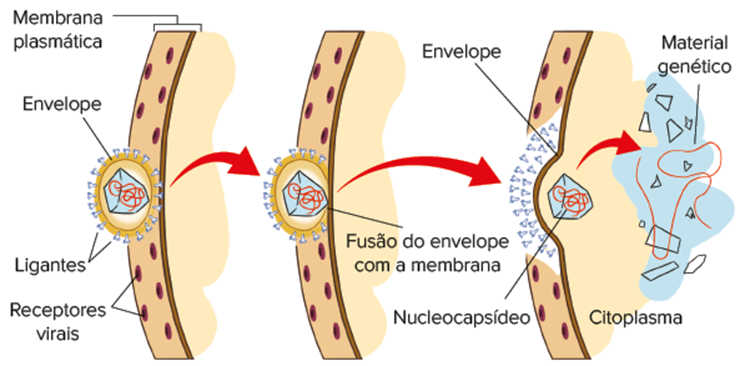
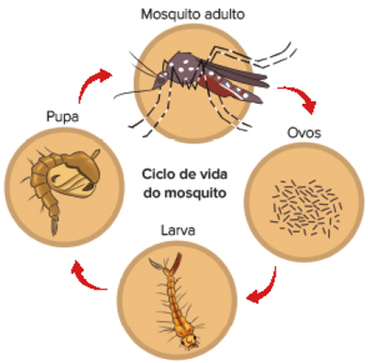

<!DOCTYPE html>
<html lang="pt-BR">

<head>
    <meta charset="UTF-8">
    <meta http-equiv="X-UA-Compatible" content="IE=edge">
    <meta name="viewport" content="width=device-width, initial-scale=1.0">
    <title>Lumen</title>
    <link rel='stylesheet' type='text/css' href='./css/style.css' />
    <link rel='stylesheet' type='text/css' href='./css/global.css' />
</head>

<body>
    <main>
        <div class="body">
            <div class="main">
                <div class="section">

                    <div class="content-fullwidth-area">
                        <div class="titulo-cap-section">
                            <div class="cap-section">
                                <span class="cap-texto">Capítulo</span>
                                <p class="cap-number">
                                    2
                                </p>
                            </div>
                            <div class="titulo-cap-background">
                                <h1 class="título-cap">
                                    Vírus e viroses
                                </h1>
                            </div>
                        </div>
                        
                    </div>

                    <!-- home -->
                    <div class="text-content-area">
                        <p class="img-subtitle">
                        </p>
                        <p class="img-credit">
                            Representação 3D de vírus bacteriófagos atacando bactéria
                        </p>
                        <p class="general-text">
                            Os vírus são considerados parasitas intracelulares obrigatórios. Para se reproduzir, precisam inicialmente se fixar na superfície de uma célula hospedeira específica. Na imagem acima, são representados vírus bacteriófagos, indicados em vermelho, na superfície
                            de uma bactéria, indicada em azul, na primeira etapa da reprodução viral. Os vírus invadem a célula hospedeira e utilizam toda a maquinaria existente nela para a produção de novas cópias virais. No final do processo, ocorre,
                            geralmente, a destruição da célula parasitada para a liberação das novas partículas virais. Por esse motivo, os vírus são responsáveis por doenças em diversos seres vivos. Surpreendentemente, os vírus podem ser utilizados na
                            engenharia genética e no controle biológico de pragas, com diversos benefícios para a humanidade. Seu estudo é fundamental para que possamos criar mecanismos de proteção contra esses agentes infecciosos e utilizá-los em nosso
                            benefício, o que é o principal tema abordado neste capítulo.


                            <!-- bullet and boxe-2 -->
                            <div class="text-content-area">
                                <!-- bullet -->
                                <div class="bullet-list-section">
                                    <ul class="bullet-list">
                                        <li class="general-text">
                                            Qual é a estrutura dos vírus?
                                        </li>
                                        <li class="general-text">
                                            Cite quatro doenças humanas que você conheça e que sejam causadas por vírus.
                                        </li>
                                        <li class="general-text">
                                            Como os vírus são utilizados na engenharia genética?
                                        </li>
                                    </ul>
                                </div>
                                <!--boxe-2  -->
                                <div class="boxe-06-02-cie">
                                    
                                    <p class='chapter-description'> Neste capítulo serão abordadas as habilidades
                                        <span class='boxe-06-texto'>
                                  EM13CNT202
                                </span>,
                                        <span class='boxe-06-texto'>
                                  EM13CNT301
                                </span> , <span class='boxe-06-texto'>
                                  EM13CNT304
                                </span>, <span class='boxe-06-texto'>
                                  EM13CNT306
                                </span> e <span class='boxe-06-texto'>
                                  EM13CNT310
                                </span>
                                    </p>
                                </div>
                            </div>


                            <div class="titulo1-section">
                                
                                <h3 class="titulo1">Descoberta dos vírus</h3>
                            </div>
                            <p class="general-text">A descoberta dos vírus teve início com o estudo de uma doença que afeta o tabaco, conhecida como mosaico do tabaco, que deixa as folhas amareladas e impróprias para a comercialização. Em 1892, o bacteriologista russo Dmitri
                                Ivanovski (1864-1920) apresentou para a Academia de Ciências de São Petersburgo um artigo segundo o qual o agente infeccioso da doença do mosaico do tabaco poderia ser transmitido para plantas sadias, mesmo depois que o
                                extrato retirado de plantas doentes passasse por um filtro de porcelana Chamberland. <br> O filtro de porcelana Chamberland era utilizado por médicos e veterinários para isolar bactérias causadoras de doenças. Para a surpresa
                                de Ivanovsky, o agente infeccioso não foi retido no filtro, o que o fez pensar que se tratava de uma toxina ou uma bactéria extremamente pequena. <br> Em 1898, o botânico holandês Martinus Willem Beijerinck (1851-1931)
                                repetiu as experiências de Ivanovsky e foi mais além na interpretação do fenômeno. Beijerinck percebeu que mesmo após a diluição do extrato de folhas contaminadas, o poder infeccioso permanecia, o que o fez pensar que não
                                se tratava de uma bactéria, pois não podia ser vista no microscópio, nem mesmo uma toxina, pois sua atividade não diminuía com as diluições. Era um princípio vivo, já que se reproduzia, e fluido, pois passava pelos poros
                                do filtro, sendo denominado por ele contagium vivum fluidum. <br> No início do século XX, os cientistas distinguiram bactérias e agentes que passavam pelos filtros de porcelana, que foram denominados vírus (do latim virus,
                                que significa “veneno”). Nessa época, diversos vírus foram descobertos, como o da febre aftosa (infecta o gado), o da febre amarela (infecta o ser humano) e o bacteriófago (infecta culturas de bactérias). <br> Em 1935,
                                o bioquímico e virologista estadunidense Wendell Meredith Stanley (1904-1971) conseguiu isolar o vírus do mosaico do tabaco (TMV) e descobriu que o vírus poderia ser cristalizado. Também identificou que cristais inanimados
                                poderiam produzir infecções ao entrar em contato com plantas de tabaco sadias. Por esse trabalho, Stanley deu uma grande contribuição para o estudo dos vírus e recebeu o prêmio Nobel de Química em 1943. <br> A observação
                                dos vírus só foi possível com o surgimento do microscópio eletrônico na década de 1950. A partir da microscopia eletrônica, os cientistas constataram que o vírus do mosaico do tabaco é formado por proteínas dispostas de
                                forma helicoidal ao redor de uma molécula de RNA</p>
                            
                            <p class="img-credit">A. Representação esquemática do vírus do mosaico do tabaco; B. Eletromicrografia do vírus do mosaico do tabaco (cerca de 300 nm de comprimento). C. Folhas de tomate contaminadas pelo vírus do mosaico do tabaco.</p>


                            <div class="double-columned-content">
                                <!-- left -->
                                <div class="double-columned-content-left">
                                    <div class="img-group">
                                        <div class="img-group1">
                                            
                                            
                                            <p class="img-credit">Representação esquemática da estrutura do adenovírus, causador do resfriado, e do vírus influenza, causador da gripe.</p>
                                        </div>
                                    </div>
                                </div>
                                <!-- right -->
                                <div class="double-columned-content-right">
                                    <div class="titulo1-section">
                                        
                                        <h3 class="titulo1">Características dos vírus</h3>
                                    </div>
                                    <p class="general-text">Ao contrário de todas as formas de vida existentes no planeta, os vírus não são incluídos em nenhum sistema de classificação de seres vivos, pois são acelulares, ou seja, não apresentam estrutura celular. Os vírus são
                                        extremamente pequenos, com tamanho entre 15 e 300 nanômetros (nm), menores que as mais diminutas bactérias. Apenas nas últimas décadas é que foram descobertos os mimivírus, com mais de 600 nm, e os pandoravírus,
                                        que podem atingir 1 micrômetro (µm). <br> Fora das células hospedeiras, os vírus existem como partículas individuais denominadas vírions. Cada vírion, unidade básica do vírus, é composto de uma ou diversas moléculas
                                        de ácido nucleico (DNA ou RNA) revestidas por uma cápsula chamada capsídeo (do latim capsa, que significa “caixa”), formada por proteínas, denominadas capsômeros (do latim capsa e do grego meros, que significam,
                                        respectivamente, “caixa” e “partes”). Dependendo do tipo de vírus, o capsídeo pode ter formato poliédrico, de bastão ou apresentar forma mais complexa, como a do bacteriófago. O conjunto formado pelo capsídeo e
                                        pelo material genético é denominado nucleocapsídeo.
                                        <br> Em alguns vírus, o nucleocapsídeo é envolvido por uma membrana lipoproteica derivada da célula hospedeira denominada envelope viral. <br> Além de proteínas e lipídeos de origem celular, o envelope viral também
                                        apresenta proteínas específicas do vírus, sintetizadas pela célula hospedeira e adicionadas à membrana plasmática antes da liberação do vírus pela célula. Dependendo da presença ou não de envelope, os vírus podem
                                        ser classificados em dois grupos: envelopados e não envelopados. <br> O ácido nucleico presente nos vírus pode ser o DNA de fita dupla, o DNA de fita simples, o RNA de fita dupla ou o RNA de fita simples, dependendo
                                        do tipo de vírus. Geralmente o vírus tem uma única molécula linear ou circular de ácido nucleico, embora alguns vírus possam ser constituídos por múltiplas cópias de ácido nucleico, como o vírus Influenza, causador
                                        da gripe. Os vírus de RNA de fita simples podem ser divididos em três grupos: vírus de RNA positivo, vírus de RNA negativo e os retrovírus. <br> O tipo de ácido nucleico presente no vírus é que determina como ocorrerá
                                        o processo de síntese de proteínas virais pela célula hospedeira. A seguir são indicadas algumas situações possíveis para a síntese de proteínas virais, de acordo com o tipo de ácido nucleico presente no vírus:</p>
                                    

                                </div>
                            </div>


                            <div class="leitura-doc">
                                <p class="title">
                                    Questão resolvida
                                </p>
                            </div>

                            <div class="flex-exercicioss">
                                <p class="exercicio-text"><b>1</b></p>
                                <p class="exercicio-text"><b> Uerj</b> A gripe conhecida popularmente como gripe suína é causada por um vírus influenza A. Esse tipo de vírus se caracteriza, dentre outros aspectos, por: <br> • ser formado por RNA de fita simples (-), incapaz de
                                    atuar como RNA mensageiro ou de sintetizar DNA nas células parasitadas; <br> • os RNA complementares do RNA viral poderem ser traduzidos em proteínas pelo aparelhamento celular. <br> • Os esquemas a seguir apresentam
                                    um resumo de etapas dos processos de replicação de alguns dos vírus RNA, após penetrarem nas células.</p>
                            </div>
                            
                            <p class="exercicio-text">O tipo de replicação encontrado no vírus influenza A está representado no esquema de número:</p>
                            <ol class="questao-alternativas" type="a">
                                <li>I</li>
                                <li>II</li>
                                <li>III</li>
                                <li>IV</li>
                            </ol>
                            <h4 class="titulo4">Resolução:</h4>
                            <p class="general-text">Alternativa: B <br> O vírus influenza A apresenta RNA de fita simples (-), incapaz de atuar como RNA mensageiro ou de sintetizar DNA nas células parasitadas. Dessa forma, a primeira enzima que deve atuar é a RNA polimerase-RNA
                                dependente, que será responsável pela produção de uma molécula de RNA viral complementar. A molécula de RNA viral complementar poderá ser utilizada pela célula hospedeira para a produção de proteínas virais (a tradução
                                ocorre com o aparelho celular).</p>


                            <p class="general-text">Os vírus não têm metabolismo próprio, ou seja, não sintetizam nenhuma molécula nem realizam qualquer reação química de forma independente. Dessa forma, todos os vírus são parasitas intracelulares obrigatórios, que invadem células
                                de diferentes tipos de seres vivos, como bactérias, fungos, protozoários, algas, plantas e animais, incluindo humanos. Quando os vírus estão fora da célula, eles não apresentam nenhuma atividade vital, e podem até mesmo
                                ficar cristalizados por diversos anos. Ao entrar em contato com uma célula hospedeira, entretanto, inicia-se o processo de reprodução viral. <br> Diferentemente da matéria sem vida, os vírus apresentam evolução biológica,
                                ou seja, eles se modificam ao longo do tempo. Mutações e recombinações gênicas são responsáveis pela variabilidade genética que ocorre entre os vírus, o que explica a dificuldade de produção de vacinas contra algumas doenças,
                                como a Aids. Além disso, os vírus apresentam o mesmo código genético universal dos demais seres vivos, o que faz as células hospedeiras produzirem proteínas virais ao serem invadidas por eles. <br> Qual seria a origem evolutiva
                                dos vírus? De acordo com os cientistas, os vírus surgiram de forma independente em diversos momentos. Atualmente a hipótese mais aceita é a de que os vírus teriam surgido de segmentos de ácidos nucleicos (DNA ou RNA) que
                                se desprenderam das células e se moveram para outras células. A formação de um envoltório protetor ao redor desses segmentos teria facilitado a infecção de células não danificadas. Os candidatos a fontes originais de genomas
                                virais são os plasmídeos bacterianos e os transposons, pois ambos são elementos genéticos móveis.
                            </p>

                            <div class="titulo1-section">
                                
                                <h3 class="titulo1">Reprodução dos vírus</h3>
                            </div>
                            <p class="general-text">Todos os vírus se reproduzem apenas no interior das células parasitadas por eles, pois a ausência de metabolismo próprio e de estruturas celulares impede que sua reprodução possa ocorrer de forma independente. De forma geral,
                                a reprodução dos vírus na célula hospedeira segue as seguintes etapas: fixação, penetração, desnudação, multiplicação viral, montagem e liberação de novos vírus para o meio extracelular. <br> Na primeira fase da reprodução,
                                ocorre a fixação do vírus, processo também conhecido como adsorção, na superfície da célula parasitada. Os vírus têm proteínas especiais denominadas ligantes ou antirreceptores, presentes na cápsula (no caso de vírus não
                                envelopados) ou no envelope lipoproteico (no caso dos vírus envelopados), que se ligam a determinadas proteínas da membrana plasmática ou da parede celular da célula hospedeira, denominadas receptores virais. A interação
                                entre ligantes e receptores virais determina a especificidade de hospedeiro apresentada pelos vírus e funciona como um sistema chave-fechadura de reconhecimento. <br> Para invadir uma célula, os ligantes dos vírus têm de
                                se encaixar perfeitamente nos receptores virais presentes na superfície da célula hospedeira, ou seja, só conseguem infectar células que apresentam receptores compatíveis com os ligantes de seu envoltório. Por exemplo,
                                o vírus HIV apresenta a glicoproteína denominada GP120, ligante viral, que se encaixa perfeitamente nos receptores CD4 presentes em determinados tipos de linfócitos que ocorrem na espécie humana. <br> Depois de se fixar
                                na superfície da célula hospedeira, ocorre a penetração do vírus, porém esse mecanismo ocorre de diferentes maneiras, dependendo do tipo de vírus. Nos bacteriófagos, por exemplo, ocorre a injeção do ácido nucleico no interior
                                da bactéria, e o capsídeo permanece do lado de fora da célula</p>


                            <div>
                                <!-- watch out -->
                                <div class='wrap-collabsible'>
                                    <input id='collapsible-his-1' class='toggle-mat' type='checkbox'>
                                    <label for='collapsible-his-1' class='lbl-toggle-mat'>
                              <div class='flex-icon'>
                                  
                                  <p class='collapsible-title'>Fique ligado!</p>
                              </div>
                              <div class='flex-icon'>
                                  
                                  
                              </div>
                          </label>
                                    <div class='collapsible-content-mat'>
                                        <div class='content-inner'>
                                            <div class='text-content-area'>
                                                <p class='general-text'>
                                                    <p class='chapter-description general-text'>
                                                        Os receptores virais são proteínas ou carboidratos presentes na membrana plasmática da célula com papel específico no funcionamento celular, como o reconhecimento de células ou moléculas do meio extracelular. A conexão dos ligantes virais com os receptores
                                                        virais resulta de uma deturpação da atividade de reconhecimento, adaptação dos vírus como portais de entrada nas células.
                                                    </p>
                                            </div>
                                            </p>
                                        </div>
                                    </div>
                                </div>
                            </div>


                            
                            <p class="img-credit">SADAVA, D. et al. Vida: a ciência da Biologia. São Paulo: Artmed, 2009. <br> Representação esquemática da fixação do HIV na membrana plasmática do linfócito TCD4.
                            </p>

                            
                            <p class="img-credit">Representação esquemática da penetração do bacteriófago na bactéria por injeção do material genético (DNA).</p>
                            <p class="general-text">Determinados vírus envelopados, como o HIV, utilizam o envelope para a entrada na célula hospedeira. Após a fixação do envelope na célula bacteriana, ocorre a fusão do envelope viral com a membrana plasmática da bactéria, da
                                qual passa a fazer parte, e apenas o nucleocapsídeo penetra no citoplasma.</p>

                            
                            <p class="img-credit">Representação esquemática da penetração de um vírus envelopado na célula hospedeira por fusão do envelope com a membrana plasmática.
                            </p>
                            <p class="general-text">Outra estratégia dos vírus é a entrada na célula por endocitose, processo em que a célula hospedeira engloba o vírus após sua fixação na superfície celular. Uma vez no interior da célula, o nucleocapsídeo escapa do vacúolo
                                e se espalha pelo citoplasma da célula.</p>
                            
                            <p class="img-credit">Representação esquemática da penetração de um vírus envelopado na célula hospedeira por endocitose.</p>
                            <p class="general-text">Depois de invadir a célula, inicia-se o desnudamento do nucleocapsídeo, processo em que enzimas presentes no lisossomo removem o capsídeo viral e expõem o ácido nucleico do vírus ao citoplasma. Após o desnudamento, ocorre a
                                multiplicação viral comandada pela célula hospedeira. Os vírus, independentemente do tipo de ácido nucleico, apresentam genes apenas para moléculas de RNA mensageiro. Dessa forma, os vírus precisam utilizar RNA ribossômico,
                                RNA transportador, nucleotídeos, aminoácidos e energia da célula hospedeira para que ocorra a produção de novas cópias virais. <br> Após a produção de material genético (DNA ou RNA) e de proteínas virais pela célula hospedeira,
                                ocorre uma fase importante da reprodução dos vírus, que é a montagem ou maturação das novas cópias virais. Nesse processo, as proteínas que formam o capsídeo, o material genético e as enzimas virais, no caso de alguns vírus,
                                agregam-se para formar o nucleocapsídeo. Somente após a formação completa do nucleocapsídeo é que o vírion (partícula viral) pode ser eliminado da célula hospedeira. <br> A liberação de novos vírus pode ocorrer por lise
                                celular, no caso do bacteriófago, ou por brotamento, no caso do HIV. Para a liberação por lise celular ocorre inicialmente a síntese de enzimas virais pela célula hospedeira, denominadas lisozimas, que perfuram a parede
                                celular e permitem a entrada de líquido na célula. Com a entrada de líquido, a célula bacteriana incha e finalmente explode, processo conhecido como lise celular, liberando dezenas de cópias de novos vírus para o meio extracelular.
                                <br> O processo de liberação por brotamento se inicia com o transporte intracelular do nucleocapsídeo viral para a membrana plasmática da célula hospedeira. Quando o nucleocapsídeo se aproxima da superfície da célula, a
                                membrana plasmática realiza um processo de evaginação, que envolve o nucleocapsídeo e forma um broto, que logo se desprende da célula. O crescimento do broto representa o envolvimento do nucleocapsídeo viral pela membrana
                                plasmática da célula, que formará o envelope do vírus.
                            </p>

                            

                            <h3 class="titulo1">Reprodução do bacteriófago</h3>
                            <p class="general-text">Os bacteriófagos (do grego phagos, que significa “comer”), ou seja, vírus “comedores de bactérias”, também conhecidos como fagos, são vírus que atacam e parasitam bactérias. O ciclo reprodutivo dos bacteriófagos foi um dos
                                primeiros a serem desvendados pelos cientistas. Os bacteriófagos podem se reproduzir por meio de dois ciclos alternativos: o ciclo lítico e o ciclo lisogênico.</p>
                            <h4 class="titulo4">Ciclo lítico</h4>
                            <p class="general-text">O ciclo reprodutivo que culmina na morte da célula hospedeira é denominado ciclo lítico. Esse termo se refere ao último estágio da reprodução, em que ocorre a lise celular (explosão da célula) com liberação de novas cópias
                                de bacteriófagos para o meio extracelular. Um bacteriófago que se reproduz somente por ciclo lítico é denominado fago virulento. Poucos ciclos líticos desse fago são capazes de destruir rapidamente uma população inteira
                                de bactérias. <br> O bacteriófago T4 é um exemplo de fago virulento que apresenta um capsídeo proteico complexo, formado por uma cabeça facetada, que envolve uma longa molécula de DNA de cadeia dupla, e uma cauda cilíndrica,
                                composta de uma bainha contrátil e de fibras. <br> Ao encontrar uma bactéria, o fago T4 se fixa na parede da célula por meio de ligantes, presentes nas fibras da cauda, que se ligam aos receptores virais. Logo após a fixação,
                                o bacteriófago perfura a parede da bactéria, contrai a bainha e injeta apenas seu DNA dentro da célula bacteriana.</p>

                            
                            <p class="img-credit">Representação esquemática (A) e eletromicrografia (B) de um bacteriófago virulento (entre 24 e 200 nm) (C) Eletromicrografia mostra bacteriófagos (entre 24 e 200 nm) injetando DNA em uma bactéria (em geral, medem entre 0,5
                                μm e 5 μm).</p>
                            <p class="general-text">Uma vez dentro da célula hospedeira, o DNA viral atrai a enzima RNA polimerase da bactéria e inicia a transcrição de genes virais, responsáveis pela produção de proteínas virais pela célula hospedeira. As proteínas virais estimulam
                                a multiplicação do DNA viral e a transcrição dos genes virais. As enzimas virais destroem o DNA bacteriano e fornecem nucleotídeos, que serão utilizados para a produção de novas cópias de DNA viral. Além disso, a transcrição
                                e tradução dos genes virais são responsáveis pela produção das proteínas que formam o capsídeo do bacteriófago. <br> Na fase final da infecção, ocorre a montagem do nucleocapsídeo dentro da célula bacteriana e produção
                                da enzima lisozima, que degrada a parede celular bacteriana e permite a entrada de líquido na célula. Com a entrada de líquido, a célula bacteriana incha e finalmente explode, processo conhecido como lise celular, liberando
                                dezenas de cópias de novos vírus para o meio extracelular, que podem infectar outras bactérias. <br> O processo total, desde a fixação do vírus na superfície da bactéria até a liberação de novos bacteriófagos, ocorre em
                                torno de meia hora. Essa sequência de eventos, entretanto, deve ser cuidadosamente controlada, pois uma lise prematura poderia comprometer seriamente a formação completa de novos bacteriófagos pela bactéria, o que inviabilizaria
                                novas infecções.</p>
                            <h4 class="titulo4">Ciclo lisogênico</h4>
                            <p class="general-text">Outro ciclo reprodutivo do bacteriófago, que permite a reprodução do DNA viral sem destruir a célula hospedeira, é denominado ciclo lisogênico. Os bacteriófagos capazes de utilizar esses dois tipos de ciclo reprodutivo, lítico
                                e lisogênico, são denominados fagos temperados, e as bactérias que apresentam esses fagos em seus DNAs são denominadas bactérias lisogênicas. <br> A infecção de uma célula bacteriana por um bacteriófago temperado se inicia
                                quando o vírus se liga à superfície da célula bacteriana e injeta nela seu DNA linear. O que ocorre na sequência depende do ciclo reprodutivo que será ativado. Se o ciclo lítico for ativado, os genes virais imediatamente
                                destroem o DNA bacteriano e tornam a célula hospedeira uma verdadeira fábrica de novos vírus, que serão liberados da célula ao final do processo por lise celular. <br> Se o ciclo lisogênico for ativado, proteínas virais
                                inserem o DNA viral no DNA bacteriano. Quando o DNA viral fica integrado ao DNA bacteriano, o vírus é conhecido como provírus ou profago, que ficará silenciado dentro da célula bacteriana. A cada ciclo reprodutivo da bactéria,
                                uma cópia do profago é transferida para cada bactéria- -filha. Uma única bactéria infectada origina rapidamente uma linhagem completa de bactérias portadoras de profagos, o que permite que o vírus se perpetue sem matar
                                as bactérias. <br> O termo lisogênico significa que eventualmente o profago pode despertar e estimular na célula o ciclo lítico. Alguns sinais ambientais, como determinados agentes químicos, radiação de alta energia, que
                                danifica o DNA, ou estresse na célula hospedeira são responsáveis pela alteração do ciclo lisogênico para o lítico.</p>

                            
                            <p class="img-credit">SADAVA, D. et al. Vida: a ciência da Biologia. São Paulo: Artmed, 2009. <br> Representação esquemática dos ciclos lítico e lisogênico do bacteriófago temperado.
                            </p>

                            <h3 class="titulo1">Reprodução do HIV</h3>
                            <p class="general-text">Os vírus que apresentam o ciclo reprodutivo mais complexo são os retrovírus, como o HIV, causador da Aids. O vírion do HIV apresenta envelope lipoproteico com glicoproteínas, entre elas a GP120, capazes de se ligar a determinados
                                receptores, como as proteínas CD4, presentes em células do sistema imunológico, como o linfócito TCD4. Além do envelope, o vírion do HIV apresenta capsídeo proteico, duas moléculas de RNA de fita simples e enzimas, como
                                a transcriptase reversa, a protease e a integrase. A enzima transcriptase reversa pode produzir uma molécula de DNA viral a partir de RNA viral na célula hospedeira, ou seja, realiza uma retrotranscrição. A enzima integrase
                                é responsável pela integração do DNA viral ao DNA nuclear da célula hospedeira, e a protease é responsável pela quebra dos polipeptídeos para a produção de proteínas virais. <br> Tudo começa quando a GP120 (ligante) do
                                HIV se liga à proteína CD4 (receptor viral) presente no linfócito TCD4, uma das células parasitadas pelo vírus no corpo humano. Após a fixação do HIV na superfície do linfócito, ocorre a invasão do vírus por fusão do envelope
                                viral com a membrana plasmática da célula. Uma vez dentro da célula, o nucleocapsídeo se dissolve, pela ação de enzimas celulares, e libera as moléculas de RNA e as enzimas virais transcriptase reversa e integrase. <br>                                A transcriptase reversa entra em ação e, utilizando a maquinaria da célula (nucleotídeos e energia), sintetiza uma molécula de DNA viral a partir do RNA viral, fenômeno conhecido como transcrição reversa. A partir da fita
                                recém-sintetizada de DNA viral, a transcriptase reversa produz uma cadeia complementar de DNA e forma um DNA viral de cadeia dupla. Após a produção de DNA viral, o RNA do vírus é destruído pela transcriptase reversa. O
                                DNA viral migra e penetra no núcleo da célula hospedeira, onde será integrado ao DNA nuclear com o auxílio da enzima integrase do vírus. <br> O DNA viral, agora integrado ao DNA nuclear da célula hospedeira e denominado
                                provírus, começa a sintetizar moléculas de RNA viral, e algumas delas vão compor o material genético dos novos vírus. Outras serão utilizadas no citoplasma da célula hospedeira para a produção de proteínas virais. Algumas
                                moléculas de RNA viral serão traduzidas por ribossomos, que produzirão, inicialmente, longas cadeias polipeptídicas que serão quebradas por enzimas virais, denominadas proteases, para produzir as proteínas virais, como
                                as do capsídeo. Além delas, serão sintetizadas as enzimas virais (integrase, transcriptase reversa e protease) e as glicoproteínas virais, como a GP120. Vesículas do retículo endoplasmático rugoso com essas glicoproteínas
                                virais migram para a superfície da célula e se fundem com a membrana plasmática, o que faz com que as glicoproteínas virais sejam parte integrante da membrana plasmática do linfócito.</p>

                            
                            <p class="img-credit">REECE, J. B. et al. Biologia de Campbell. 10. ed. Porto Alegre: Artmed, 2015. <br> Representação esquemática do ciclo reprodutivo do HIV no linfócito TCD4.
                            </p>
                            <p class="general-text">Após a produção de RNA, proteínas e enzimas virais, ocorre a montagem dos nucleocapsídeos, por agregação dessas moléculas, dentro da célula hospedeira. O nucleocapsídeo agora se aproxima da membrana plasmática da célula, onde
                                há glicoproteínas virais. A liberação de novos vírus ocorre por brotamento, processo em que a membrana plasmática do linfócito envolve o nucleocapsídeo e origina o envelope viral. Os vírions completos do HIV são expelidos
                                dos linfócitos e podem infectar células sadias. O linfócito continua tendo o DNA viral associado ao DNA nuclear, o que permite a produção de novas partículas virais</p>

                            


                            <div class="wrap-collabsible">
                                <input id="collapsible-mat" class="toggle-mat" type="checkbox">
                                <label for="collapsible-mat" class="lbl-toggle-mat">
                                                    <div class="flex-icon">
                                                      
                                                      <p class="collapsible-title">
                                                        Em Matemática, vemos que...
                                                      </p>
                                                    </div>
                                                    <div class="flex-icon">
                                                      
                                                      
                                                    </div>
                                                  </label>
                                <div class="collapsible-content-mat">
                                    <div class="content-inner">
                                        <div class="text-content-area">
                                            ...o início da pandemia de covid-19 foi marcado pelo crescimento expressivo de novos casos da doença. Analisando os gráficos estatísticos que apresentam o número de infectados, ao longo do primeiro trimestre de registro da doença, foi possível perceber
                                            que esse crescimento pode ser modelado por uma função exponencial. <br>
                                            
                                            <p class="img-credit">Dados: Organização Mundial de Saúde (OMS)</p>
                                            Casos registrados de covid-19 no mundo no primeiro trimestre de registro da doença.

                                        </div>
                                    </div>
                                </div>
                            </div>

                            <h3 class="titulo1">Reprodução do coronavírus </h3>
                            <p class="general-text">Os coronavírus (do latim corona, que significa “coroa”) são objeto de muitas pesquisas científicas. Os estudos que envolvem esse grupo de vírus são de grande importância, visto que alguns coronavírus estão relacionados a infecções
                                do trato respiratório humano, especialmente o SARS-CoV – agente causador da doença respiratória aguda grave –, o MERS-CoV – coronavírus causador da síndrome respiratória do Oriente Médio – e o SARS-CoV-2, o novo coronavírus
                                –, que causa a covid-19. Os vírus da família Coronaviridae apresentam morfologia constituída por um envelope esférico formado por uma dupla camada lipídica e proteínas estruturais. As proteínas denominadas spike são projeções
                                que se emergem do envelope viral e, vistas ao microscópio eletrônico, assemelham-se a uma coroa, originando o nome dado a essa família de vírus.</p>

                            
                            <p class="img-credit">Representação das proteínas estruturais componentes da partícula viral do novo coronavírus. Note as glicoproteínas S (Spike); He (hemaglutinina – esterase); M (glicoproteína da membrana); e a proteína E (envelope). No núcleo
                                observa-se a proteína N (nucleocapsídeo) unida ao RNA simples fita (complexo RNA-proteína do nucleocapsídeo). </p>

                            <p class="general-text">As informações sobre a morfologia viral são ferramentas importantes para a compreensão dos mecanismos de infecção do vírus nas células hospedeiras. Por meio desse conhecimento, podem ser estabelecidas as estratégias aplicadas
                                para os tratamentos antiviral e sintomatológicos. O envelope viral tem uma característica química muito semelhante à das células eucariontes, ou seja, uma bicamada fosfolipídica entremeada de proteínas estruturais, dentre
                                as quais algumas facilitam a interação e a ligação com a célula hospedeira, possibilitando a inserção do material genômico viral. No caso da maior parte dos coronavírus, a glicoproteína Spike ou proteína S apresenta alta
                                afinidade por receptores presentes nas membranas plasmáticas das células do epitélio respiratório humano.</p>

                            
                            <p class="img-credit">GÓES, L. G. B. Caracterização molecular de coronavírus humano – HCoV, circulantes no município de São Paulo, SP. 2012. <br>Representação esquemática do envelope viral do coronavírus mostrando as proteínas receptoras em detalhe.
                            </p>
                            <p class="general-text">O processo de replicação viral se inicia quando a glicoproteína Spike interage ou se liga a alguns receptores da membrana plasmática de células do trato respiratório humano. Pode ocorrer uma fusão do envelope viral com a membrana
                                da célula hospedeira ou induzir-se a endocitose que forma uma estrutura chamada de endossomo, promovendo a entrada do material genético viral na célula hospedeira. Em seguida, inicia-se a tradução das enzimas necessárias
                                para os processos de replicação e transcrição. O RNA viral é traduzido e replicado, e as proteínas virais são produzidas para formar um novo vírion, como mostra a figura a seguir.</p>

                            
                            <p class="img-credit">GÓES, L. G. B. Caracterização molecular de coronavírus humano – HCoV, circulantes no município de São Paulo, SP. 2012. <br>Representação esquemática das etapas de replicação do coronavírus.
                            </p>


                            <div class="leitura-doc">
                                <p class="title">
                                    Discussão em sala
                                </p>
                            </div>

                            <h4 class="titulo4">Vírus são seres vivos?</h4>
                            <p class="general-text">Os vírus certamente são únicos, pois apresentam caraterísticas que os aproximam e outras que os afastam dos seres vivos. As características que os vírus compartilham com os seres vivos são: composição química complexa (proteínas
                                e ácidos nucleicos), presença de material genético, código genético universal, reprodução, mutações e evolução biológica. As características que afastam os vírus dos seres vivos são a ausência de: células (acelulares),
                                crescimento, homeostase, metabolismo próprio (reações químicas) e funções vitais (nutrição e produção de energia). Diante das características apresentadas pelos vírus, qual é sua opinião: <br> • Os vírus são a forma mais
                                complexa de organização molecular ou a forma mais simples de vida?<br>
                            </p>
                            
                            <p class="img-credit">Lagarta-da-soja Anticarsia gemmatalis (cerca 5 cm de comprimento), uma praga agrícola que pode ser controlada pelo vírus Baculovirus anticarsia.</p>


                            <div class="titulo1-section">
                                
                                <h3 class="titulo1">Importância dos vírus</h3>
                            </div>

                            <p class="general-text">Sabemos que todos os vírus são parasitas de células e que após a infecção viral as células parasitadas geralmente morrem. Dessa forma, como os vírus podem ser úteis para a humanidade? O fato é que se eles são especialistas
                                em invadir células, podemos usar essa estratégia a nosso favor. <br> Os bacteriófagos, por exemplo, podem ser aliados importantes no combate às bactérias. Soluções com bacteriófagos são pulverizadas em carcaças de galinhas,
                                o que reduz a contaminação da carne por bactérias durante o transporte. Em alguns países, como Geórgia e Polônia, a fagoterapia (terapia com bacteriófagos) é utilizada regularmente contra diversas infecções bacterianas.
                                Com o surgimento de bactérias multirresistentes aos antibióticos, os cientistas estão cada vez mais interessados em estudar novas linhagens de bacteriófagos que possam ser úteis no combate às doenças causadas por bactérias.
                                <br> Os vírus também podem ser utilizados para o controle biológico de pragas agrícolas. Cientistas descobriram um vírus, denominado Baculovirus anticarsia, que é capaz de controlar a lagarta-da-soja (Anticarsia gemmatalis),
                                uma praga que afeta a produtividade da soja em várias regiões do planeta. Ao se alimentar de folhas contaminadas com o vírus, a lagarta fica infectada e morre alguns dias depois. Após a morte, o corpo da lagarta endurece,
                                apodrece e se rompe, liberando milhares de vírus na plantação, que controlarão novas populações subsequentes de lagartas. <br> Muitos vírus são utilizados na engenharia genética como vetores de genes. Cientistas escolhem
                                genes de interesse e os inserem em vírus manipulados geneticamente para reduzir sua patogenicidade, mas sem interferir em seu poder de infectar células. Os retrovírus, por exemplo, podem integrar seu DNA ao DNA nuclear
                                da célula hospedeira. Dessa forma, um gene de interesse presente em um retrovírus modificado pode ser inserido no genoma das células hospedeiras, que passam a expressar esse gene e transmiti-lo para as células-filhas. <br>                                Os vírus também podem ser utilizados para a produção de vacinas, que nos protegem contra doenças causadas por eles. Cientistas podem utilizar vírus atenuados (enfraquecidos), ou seja, que não são capazes de causar doença
                                aos humanos, mas podem desencadear uma resposta imunológica satisfatória para a produção de vacinas eficientes contra as viroses. Também podem ser utilizados vírus inativados (destruídos) em que apenas moléculas virais,
                                e não o vírus todo, são utilizadas para a imunização.
                            </p>

                            <div class="titulo1-section">
                                
                                <h3 class="titulo1">Doenças causadas por vírus</h3>
                            </div>
                            <p class="general-text">Os vírus causam doenças nos animais e nos vegetais, denominadas, genericamente, viroses. Antes de iniciar o estudo das doenças virais, é fundamental compreender o significado de alguns termos importantes na parasitologia viral.
                                <br> • Agente etiológico ou patogênico (do grego pathos e genos, que significam, respectivamente, “doença” e “origem”): é o causador da doença. Por exemplo, o agente etiológico da Aids é o vírus HIV. <br> • Vetor (do latim
                                vector, que significa “aquele que carrega”): é o ser vivo capaz de transmitir o agente patogênico, de maneira ativa ou passiva. Por exemplo, o mosquito Aedes aegypti é o vetor do vírus da dengue. <br> • Reservatório natural:
                                é qualquer ser vivo em que o agente infeccioso vive habitualmente e se multiplica, sem causar grandes danos, e por meio do qual ele pode ser transmitido para outros organismos. Por exemplo, morcegos frugívoros que vivem
                                na África são reservatórios naturais do vírus ebola. <br> • Profilaxia (do grego pro e phylaxis, que significam, respectivamente, “antes” e “proteção”): é o conjunto de medidas que devem ser adotadas para a prevenção e
                                erradicação de determinada doença. Por exemplo, o uso de preservativo é uma medida de profilaxia contra o HIV. <br> • Arbovírus (arthropod borne virus): é todo vírus transmitido por artrópodes. Por exemplo, a dengue é causada
                                por um arbovírus transmitido pela picada de fêmeas do mosquito Aedes aegypti. <br> • Epidemia (do grego epi e demos, que significam, respectivamente, “sobre” e “povo”): é toda doença que surge de forma súbita, que se espalha
                                rapidamente em uma determinada região e afeta um número de pessoas maior que o número habitual esperado e por um tempo limitado. Por exemplo, no Brasil há atualmente uma epidemia de sífilis (bacteriose). <br> • Endemia
                                (do grego en e demos, que significam, respectivamente, “no” e “povo”): é toda doença que persiste por vários anos em uma determinada região e que afeta de forma permanente um número constante de pessoas. Por exemplo, no
                                Brasil a malária (protozoose) é uma doença endêmica da região Amazônica. <br> • Pandemia (do grego pan e demos, que significam, respectivamente, “todo” e “povo”): é toda doença que se espalha por várias regiões do planeta,
                                em uma onda epidêmica que pode se prolongar por vários anos. Por exemplo, a Aids é uma doença encontrada em todos os continentes do planeta, sendo considerada uma pandemia mundial. <br> • Emergente: é uma doença que não
                                era conhecida no planeta ou na região em que apareceu. Por exemplo, no século passado surgiu uma doença emergente na África denominada febre hemorrágica (ebola). <br> • Reemergente: é uma doença que retorna com força após
                                um longo período de tempo sob controle. Por exemplo, em 2018 a febre amarela tornou-se uma doença reemergente na costa leste do Brasil.
                            </p>


                            <h3 class="titulo1">Gripe</h3>
                            <p class="general-text">A gripe é também conhecida como influenza (do latim influenza, que significa “influência”), pois no século XIV acreditava-se que a doença era causada pela influência dos corpos celestes. A gripe é uma das doenças virais mais
                                corriqueiras na população humana e é responsável pela morte de milhares de pessoas todos os anos. Na grande pandemia de gripe conhecida como gripe espanhola, morreram entre 20 e 40 milhões de pessoas em todo o mundo, de
                                todas as idades e classes sociais. O agente etiológico da gripe é o Influenzavirus, um vírus que apresenta diversas variedades e que pertence à família Orthomyxoviridae. O vírion do Influenzavirus apresenta envelope lipoproteico
                                que envolve sete ou oito moléculas diferentes de RNA negativo de cadeia simples, cada uma envolvida por um capsídeo proteico. O envelope tem dois tipos de glicoproteínas características do vírus da gripe: as espículas H
                                (hemaglutinina) e as espículas N (neuraminidase).
                            </p>
                            
                            <p class="img-credit">Representações esquemáticas do Influenzavirus, causador da gripe. Na ilustração em 3D, do lado direito, as saliências de cor laranja são as espículas H, e as de cor verde são as espículas N.</p>
                            <p class="general-text">As diferentes variedades de vírus da gripe são resultantes das combinações existentes entre os diferentes tipos de espículas H e N. <br> Os cientistas já identificaram 16 tipos diferentes de espículas H e 9 tipos de espículas
                                N, que costumam ser identificadas por índices alfanuméricos (H0, H1, H2 etc.; N1, N2, N3 etc.). A pandemia de gripe asiática de 1957, por exemplo, foi causada pelo Influenzavirus H2N2, ou seja, uma variedade resultante
                                da combinação da espícula H do tipo 2 e espícula N do tipo 2. <br> A gripe é uma doença contagiosa, pois é transmitida por meio de secreções respiratórias e gotículas de saliva eliminadas pela tosse, pelo espirro e pela
                                fala de pessoas doentes. Também pode ocorrer a transmissão da doença por meio do contato com superfícies, como corrimãos de escadas ou maçanetas de portas que estejam contaminados com essas secreções. <br> O vírus da gripe
                                tem afinidade por células do sistema respiratório, nas quais começa a se multiplicar. <br> Após alguns dias de infecção, começam os sintomas da doença: febre, coriza, tosse, dores musculares, dor de cabeça, mal-estar e
                                fraqueza. Na maioria dos casos, a doença desaparece após alguns dias do início da manifestação dos sintomas. Como é uma doença autolimitada, o tratamento consiste em medicamentos para aliviar os sintomas da doença, como
                                analgésicos (aliviar as dores) e antitérmicos (para diminuir a febre). A cura da doença ocorre porque o corpo da pessoa produz anticorpos contra as espículas virais H e N. <br> A profilaxia contra a gripe envolve cuidados
                                de higiene pessoal e vacinação. A vacina é uma medida importante para a prevenção, mas oferece proteção limitada, de cerca de um ano, pois os vírus são altamente mutagênicos. Depois de um ano, novas variedades mutantes
                                de vírus surgem, para as quais a pessoa que tomou a vacina não está imunizada. <br> As variedades mutantes são responsáveis pelos novos surtos da doença que ocorrem todos os anos, especialmente nos meses de inverno, quando
                                a imunidade das pessoas diminui devido às variações climáticas. <br> Medidas de higiene pessoal, como lavar as mãos com água e sabão, para evitar a contaminação pessoal, e uso de máscaras pelos doentes, para evitar a contaminação
                                do ambiente, são importantes na profilaxia da doença. Evitar contato e isolar os doentes são medidas fundamentais, especialmente em caso de epidemia, visto que a gripe é uma doença contagiosa.
                            </p>

                            <h3 class="titulo1">Covid-19</h3>


                            <div class="double-columned-content">
                                <!-- left -->
                                <div class="double-columned-content-left">
                                    <p class="general-text">É uma doença infectocontagiosa causada pelo novo coronavírus SARS-CoV-2. Foi registrada inicialmente no final do ano de 2019, ao se relacionar o agente causador a uma série de casos de pneumonia na cidade de Wuhan,
                                        na China. <br> A transmissibilidade se dá de pessoa a pessoa, principalmente por meio do contato inferior a 2 m. As secreções contaminadas, como gotículas de saliva ou catarro, podem ser veiculadas pela fala, espirro,
                                        tosse ou atingir superfícies. Também pode ocorrer a transmissão aérea por meio de aerossóis carregados com partículas virais do novo coronavírus, emitidas pela fala ou respiração de indivíduos contaminados. A transmissão
                                        fecal-oral pode ocorrer, já que o SARS-CoV-2 também é encontrado no trato gastrointestinal. Existem relatos de transmissão vertical, da mãe para o feto. <br> Os sintomas registrados com maior frequência são febre,
                                        cansaço e tosse seca. Outros sintomas foram registrados em pacientes que testaram positivo, como dificuldades para respirar, dores no corpo, perda de olfato ou paladar, dor de garganta, conjuntivite, erupção cutânea
                                        na pele ou descoloração dos dedos das mãos ou dos pés. Também foram registrados casos assintomáticos. De acordo com a Organização Mundial da Saúde (OMS), cerca de 80% das pessoas infectadas se recuperam da doença,
                                        porém qualquer pessoa está sujeita a se infectar e assumir as formas graves da covid-19. As pessoas idosas ou pessoas com comorbidades, como hipertensão, problemas cardíacos, câncer e diabetes, tendem a apresentar
                                        maior risco de desenvolver casos com maior gravidade. <br> O tratamento está baseado no suporte sintomatológico com o uso de antitérmicos, analgésicos e hidratação. Em alguns casos se faz uso de antibióticos, pois
                                        devido ao fato de a infecção pelo SARS-CoV-2 recrutar muito do sistema imunológico, o indivíduo infectado fica mais suscetível a infecções bacterianas que podem se agravar. Em casos mais graves com acometimento
                                        importante do sistema respiratório, o suporte é feito com oxigenoterapia (externa – com o uso de mascaras – ou interna – casos de intubação e ventilação mecânica). A automedicação em nenhuma circunstância deve ser
                                        realizada. Independentemente da faixa etária ou registro prévio de comorbidades, recomenda-se a procura imediata de atendimento médico caso a pessoa apresente febre e/ou tosse associada à dificuldade de respirar
                                        ou falta de ar, dor ou pressão no peito, perda da fala ou movimento. <br> Para evitar o contágio são recomendadas medidas para a prevenção da contaminação e disseminação do novo coronavírus. O distanciamento social,
                                        a higienização frequente das mãos e o uso de máscaras ainda são as medidas mais confiáveis. A testagem se mostra uma ferramenta importante no diagnóstico precoce para determinar o isolamento das pessoas contaminadas.
                                        Diante da gravidade e da velocidade de expansão da pandemia causada pelo SARS-CoV-2, foram desenvolvidas vacinas que se mostram eficazes no controle da velocidade de transmissão. Vale ressaltar que os imunizantes
                                        não impedem a infecção, porém evitam as formas graves da doença, diminuindo as taxas de internação nas redes hospitalares</p>
                                </div>
                                <!-- right -->
                                <div class="double-columned-content-right">
                                    
                                    <p class="img-credit">Representação artística e esquemática do SARS-CoV-2, agente causador da covid-19. M: membrana lipídica; S: espícula de contato do vírus com receptores celulares; E: envoltório glicoproteico; RNA: material genético viral;
                                        N: capsídeo proteico.</p>
                                </div>
                            </div>

                            <h3 class="titulo1">Aids</h3>
                            <p class="general-text">A síndrome da imunodeficiência adquirida, conhecida pela sigla Aids (acquired immunodeficiency syndrome), é uma pandemia mundial que afeta mais de 40 milhões de pessoas em todo o planeta. A doença foi observada clinicamente
                                em 1981 nos Estados Unidos em usuários de drogas injetáveis e homossexuais do sexo masculino, que apresentavam imunidade comprometida sem motivo aparente, mas os cientistas acreditam que a contaminação humana pelo vírus
                                ocorreu muito antes dessa data. <br> A doença é causada pelo vírus da imunodeficiência humana ou simplesmente HIV (do inglês human immunodeficienncy virus), que pertence ao grupo dos retrovírus (família Retroviridae). O
                                vírion apresenta envelope, duas moléculas de RNA de fita simples e enzimas, como a transcriptase reversa, a integrase e a protease. Existem dois tipos de HIV: HIV-1 (mais comum e mais agressivo) e o HIV-2 (menos comum e
                                menos agressivo). <br> O vírus HIV infecta células do sistema imunológico, entre elas os linfócitos T auxiliadores, também conhecidos como linfócitos TCD4. Essas células têm papel fundamental no sistema de defesa do organismo,
                                pois coordenam a resposta imunológica ao estimular os linfócitos B a produzir anticorpos e os linfócitos TCD8 a destruir células estranhas ao organismo. <br> Ao atacar o linfócito TCD4, o vírus HIV causa a morte da célula.
                                Ao longo do tempo, a redução do número de linfócitos TCD4 no sangue diminui a capacidade do organismo de reagir a infecções comuns. Dessa forma, a pessoa infectada pelo HIV pode ser atacada por diversos tipos de microrganismos
                                que, em condições normais, não representariam perigo. <br> Na fase inicial da contaminação pelo HIV, a pessoa não manifesta sintomas, mas a infecção pelo vírus já pode ser detectada no sangue pela presença de anticorpos
                                contra o HIV. Quando há anticorpos contra o HIV, mas não há sintomas da doença, os infectados são denominados soropositivos ou HIV positivos. <br> Mesmo não apresentando os sintomas da doença, os HIV positivos podem transmitir
                                o vírus para outras pessoas pelo ato sexual desprotegido. É fundamental esclarecer a importância da proteção nas relações sexuais, para que não ocorra a transmissão do vírus; também é relevante iniciar o tratamento antes
                                da manifestação dos sintomas da doença, o que aumenta a expectativa de vida dos portadores. A doença causa queda do número de linfócitos TCD4 no sangue, e, então, começam a aparecer os primeiros sintomas da Aids, como fraqueza,
                                febre, emagrecimento, inchaço dos linfonodos e diarreias. No estágio mais avançado, surgem problemas neurológicos e a pessoa é afetada por doenças oportunistas, como infecções pelo vírus da herpes (causa feridas na boca
                                e na genitália), candidíase (causada pelo fungo Candida albicans), pneumonia (causada pelo fungo Pneumocystis carinii), tuberculose (causada pela bactéria Mycobacterium tuberculosis), infecção do fígado, linfoma (causado
                                pelo vírus Epstein-Barr) e sarcoma de Kaposi (câncer de pele causado pelo vírus KSHV).</p>

                            <h4 class="titulo4">Comparação da concentração de HIV e linfócitos TCD4 ao longo dos anos</h4>
                            
                            <p class="img-credit">SADAVA, D. et al. Vida: a ciência da Biologia. São Paulo: Artmed, 2009. <br>Gráfico que indica a concentração de HIV e de linfócitos T ao longo dos anos em uma pessoa soropositiva sem tratamento.
                            </p>

                            <p class="general-text">O HIV está presente em diversos fluidos corporais, como sangue, sêmen, secreções vaginais, leite materno, liquido cefalorraquidiano e líquido amniótico. A transmissão ocorre quando esses fluidos corporais entram em contato
                                com mucosas (da boca, do ânus e da vagina) e com a pele, desde que haja perfurações ou cortes. <br> A principal forma de contaminação pelo HIV é a relação sexual sem preservativo com pessoa portadora do HIV. O vírus pode
                                ser transmitido independentemente da orientação sexual e do tipo de sexo praticado (anal, vaginal e oral). Outras formas de transmissão do vírus são por transfusão de sangue; transplante de órgãos; contato direto com sangue
                                de pessoa contaminada; contato com seringas ou objetos cirúrgicos contaminados; durante a gestação (pela placenta), no parto ou pela amamentação. <br> As principais medidas de profilaxia contra a Aids são: <br> • usar preservativo
                                nas relações sexuais; <br> • utilizar apenas seringas descartáveis e materiais cirúrgicos esterilizados; <br> • implementar controles rígidos nos bancos de sangue, de sêmen, de leite e de órgãos, para que não sejam disponibilizados
                                materiais contaminados pelo HIV; <br> • conscientizar mulheres portadoras do HIV sobre os riscos de contaminação do filho durante a gravidez e a amamentação; <br> • evitar contato direto com sangue de outras pessoas, mesmo
                                em caso de sangramentos na pele ou nariz.</p>
                            <p class="general-text">O tratamento clínico atual da doença consiste em uma associação de diferentes medicamentos inibidores da reprodução viral (coquetel antirretroviral), para que seja menor a chance de surgimento de vírus mutantes resistentes
                                ao tratamento. Embora não destruam completamente os vírus – ou seja, não há cura definitiva para a doença –, os medicamentos atuais possibilitam aos portadores do vírus uma melhoria na qualidade e na expectativa de vida.
                                Entre os antirretrovirais, destacam-se os inibidores da transcriptase reversa, como o AZT, 3TC, DDI e DDC, que impedem a produção de DNA viral a partir do RNA viral no linfócito. <br> Além de combater o vírus, é importante
                                utilizar medicamentos específicos que possam controlar as infecções oportunistas que aparecem quando a imunidade diminui drasticamente.</p>

                            <h3 class="titulo1">Condiloma acuminado</h3>
                            <p class="general-text">O condiloma acuminado (do grego kondyloma e do latim acuminatus, que significam, respectivamente, “tumor duro” e “pontiagudo”), também conhecido como crista-de-galo, é uma das DSTs mais comuns do planeta. A doença é causada
                                por um vírus da família Papilomaviridae (do latim papilo e oma, que significam, respectivamente, “saliência em formato de mamilo” e “tumor”) denominado Human papillomavirus (HPV), um vírus sem envelope com DNA de fita dupla
                                e capsídeo, que infecta a pele e as mucosas dos seres humanos. Existem mais de 200 tipos diferentes de HPV, e 40% deles infectam o trato genital de homens e mulheres. <br> Na maioria dos casos, a infecção pelo HPV é assintomática,
                                e o vírus pode ficar latente por vários anos no corpo da pessoa. Em alguns casos, o HPV causa lesões em forma de verrugas altas, que apresentam um cume, ou “crista”, bem pronunciado (por isso o nome condiloma acuminado).
                                Essas verrugas podem aparecer no pênis, na vulva, na vagina, no ânus, na boca, nos pés e nas mãos e geralmente regridem espontaneamente, pois o sistema imunológico é capaz de combater o HPV em grande parte dos casos. <br>                                Existem situações, no entanto, em que as características do condiloma exigem cuidados médicos. O tratamento consiste em remover as lesões condilomatosas com uso de substâncias químicas ou com cirurgias. É importante ressaltar,
                                no entanto, que curar as lesões não significa que o vírus tenha sido eliminado definitivamente. Determinadas condições, como a diminuição da imunidade do organismo, podem facilitar a multiplicação do vírus, que permanecia
                                em dormência, e as lesões clínicas reaparecem. <br> Alguns tipos de vírus HPV não são perigosos pelas lesões verrucosas que causam, mas, sim, porque estão relacionados com o surgimento de câncer. <br> O HPV 16 e o HPV 18,
                                por exemplo, são responsáveis por 70% dos casos de câncer de colo do útero. <br> Além do câncer de colo do útero, o HPV também está relacionado ao câncer na vulva, na vagina, no pênis, no ânus, na garganta e na boca.</p>

                            
                            <p class="img-credit">Representação esquemática do útero e da vagina, que mostra as várias fases do câncer de colo uterino.</p>
                            <p class="general-text">A transmissão da doença ocorre por meio de relações sexuais sem preservativo. A transmissão também pode ocorrer da mãe para o filho durante a gestação ou no parto. Uma forma menos comum de transmissão é pelo uso compartilhado
                                de toalhas, roupas íntimas e pelo vaso sanitário. <br> Não existe um método absolutamente seguro de prevenção contra o HPV. Um forma de profilaxia é a utilização do preservativo nas relações sexuais, especialmente o feminino,
                                pois permite um contato menor entre a pele dos parceiros sexuais. Além disto, selecionar os parceiros e evitar a promiscuidade são medidas que contribuem para diminuir as chances de contaminação pelo HPV. <br> Outra forma
                                de prevenção é a vacinação, que protege contra os dois tipos mais perigosos (HPV 16 e o HPV 18). A vacina é distribuída gratuitamente pelo SUS para meninos de 11 a 14 anos e para as meninas de 9 a 14 anos. Pessoas de 9
                                a 26 anos com HIV, câncer ou transplantados também podem receber a vacina. <br> De acordo com a literatura científica, as vacinas contra o HPV previnem aproximadamente 70% dos casos de câncer de colo do útero, mas não eliminam
                                a necessidade de as mulheres passarem por consultas de rotina com ginecologistas para exames preventivos, como o Papanicolau. Nesse exame, o médico observa o colo do útero e coleta uma amostra de tecido, que é encaminhada
                                para laboratórios especializados, que podem detectar se existe algum tipo de anomalia no tecido coletado que possa ser precursora do câncer.</p>


                            <div class="double-columned-content">
                                <!-- left -->
                                <div class="double-columned-content-left">
                                    
                                    <p class="img-credit">Representação esquemática em 3D do vírus da dengue.</p>
                                    <br>
                                    
                                    <p class="img-credit">Fêmea do mosquito Aedes aegypti (cerca de 1 cm) se alimentando de sangue humano.</p>
                                </div>
                                <!-- right -->
                                <div class="double-columned-content-right">
                                    <h3 class="titulo1">Dengue</h3>
                                    <p class="general-text">A dengue é uma doença endêmica em mais de 110 países, principalmente em regiões tropicais da Ásia, Oceania, África, Caribe e América. Atualmente, a doença é a arbovirose mais comum que afeta a humanidade, com cerca
                                        de 100 milhões de casos por ano. O termo dengue é de origem espanhola que significa “dengoso” ou “requebrado”, uma vez que os doentes balançam ao andar por causa das dores nos músculos e nas articulações decorrentes
                                        da doença. <br> O vírus da dengue pertence à família Flaviviridae e ao gênero Flavivirus (arbovírus), um vírus envelopado com RNA positivo de cadeia simples, que tem quatro variedades: DEN-1, DEN-2, DEN-3 e DEN-4.
                                        O vírus se originou, provavelmente, de vírus que circulavam entre macacos nas proximidades da península da Malásia. Mosquitos transmitiram os vírus ancestrais da dengue de primatas aos humanos que se aproximaram
                                        das florestas, e, após algumas mutações, surgiram os vírus da dengue atuais. <br> A transmissão da doença ocorre pela picada das fêmeas contaminadas de duas espécies de mosquito: Aedes aegypti e Aedes albopictus.
                                        Nenhuma dessas espécies é nativa das Américas, foram introduzidas no nosso continente por meio de navios que trouxeram escravos do continente Africano, onde as espécies são encontradas. O Aedes aegypti é o principal
                                        vetor da doença no Brasil, e o Aedes albopictus é o principal vetor na Ásia. O mosquito Aedes aegypti é pequeno, de cor escura, com peças bucais externas, manchas brancas no corpo e nas patas, hábitos diurnos e
                                        vive nas regiões urbanas. O macho não transmite a doença, pois se alimenta apenas de seivas vegetais. A fêmea, no entanto, alimenta-se de sangue (hematófaga) para que ocorra o amadurecimento dos ovos. <br> O desenvolvimento
                                        do inseto é holometábolo (do grego holos e metabole, que significam, respectivamente, “total” e “transformar“, “mudar”) e apresenta as seguintes fases: ovo – larva – pupa – adulto. Os ovos são depositados em locais
                                        com água parada e limpa, como caixas-d’água, poços, cisternas, pneus, latas, garrafas, vasos de plantas e bromélias que acumulam água entre as folhas. As larvas se desenvolvem na água e depois formam o estágio de
                                        pupa, do qual emerge a forma adulta</p>
                                </div>
                            </div>


                            
                            <p class="img-credit">Representação esquemática das fases do ciclo reprodutivo do mosquito Aedes aegypti.</p>
                            <p class="general-text">A doença pode se apresentar de duas formas: dengue clássica e dengue hemorrágica. Na dengue clássica, os sintomas são febre alta, fraqueza, dores musculares e nas articulações, dores de cabeça, dores nos olhos e fotofobia (aversão
                                à luz) e pequenos sangramentos na boca e no nariz. Podem surgir, ainda, pequenas manchas vermelhas pelo corpo, semelhantes às do sarampo. Cerca de uma semana depois os sintomas desaparecem, mas é preciso acompanhamento
                                médico, especialmente em pessoas debilitadas e subnutridas, nas quais a doença pode levar à morte. <br> Não existe um tratamento específico para a doença, mas o médico pode receitar analgésicos, para aliviar as dores no
                                corpo, e antitérmicos, para diminuir a febre. É importante beber bastante água ou receber aplicações de soro fisiológico para manter o corpo hidratado. Mesmo que uma pessoa já tenha tido dengue, isso não a impede de contraí-la
                                novamente, pois existem quatro variedades do vírus. A pessoa que se recuperou da doença fica imunizada contra a variedade do vírus que a infectou, mas não contra as três outras variedades do vírus, que podem causar novamente
                                a doença. <br> A forma mais grave da doença, conhecida como dengue hemorrágica, ocorre em quem já teve dengue, ou seja, tem a doença pela segunda vez, e nas pessoas com doenças crônicas, como diabetes e artrite reumatoide.
                                Os sintomas iniciais são semelhantes ao da dengue clássica, mas quando termina a fase febril os sintomas se agravam, com hemorragias intestinais, na pele e nas gengivas, queda da pressão arterial, dores abdominais, insuficiência
                                hepática e complicações neurológicas (delírio, sonolência e demência). <br> Para a profilaxia da doença devem ser tomadas medidas que consistem na eliminação dos vetores. Uma medida é impedir o acesso do mosquito a qualquer
                                fonte de água parada onde possa colocar seus ovos. Outra medida é a utilização de larvicidas e de inseticidas para combater as larvas e os mosquitos adultos. </p>

                            <h3 class="titulo1">Febre amarela</h3>
                            <p class="general-text">A febre amarela é uma doença endêmica na América Central, nas regiões tropicais da América do Sul e na África. No Brasil a febre amarela silvestre é uma doença endêmica da região Amazônica, porém, em outras regiões, períodos
                                epidêmicos podem ser registrados, o que evidencia a reemergência da doença no país. Recentemente, entre 2017 e 2019, foi registrado um dos eventos mais expressivos de febre amarela no Brasil, pois o vírus alcançou a costa
                                leste do país, onde se encontra a Mata Atlântica, que apresenta uma grande diversidade de primatas e vetores silvestres. Nessa região, a doença não era registrada havia décadas. A doença é causada pelo vírus amarílico,
                                que pertence à família Flaviviridae e ao gênero Flavivirus (arbovírus), um vírus envelopado com RNA positivo de cadeia simples. O vírus infecta inicialmente as células dos linfonodos, espalhando-se em seguida para o fígado,
                                o baço, os rins e o coração. No início da infecção, os sintomas são febre, fadiga, fraqueza, calafrios, dor de cabeça, dor nas costas, náuseas e vômitos. Os vírus causam lesões no fígado, que libera pigmentos biliares no
                                sangue, como a bilirrubina, que são depositados nas membranas mucosas e na pele, o que confere à pessoa uma cor amarelada (icterícia), sintoma responsável pelo nome da doença. Em casos graves podem ocorrer febre alta, hemorragias
                                e insuficiência de múltiplos órgãos, o que pode levar à morte. <br> Não há tratamento específico para a febre amarela. Os medicamentos são apenas para aliviar os sintomas da doença. Assim como na dengue, os medicamentos
                                que contêm ácido acetilsalicílico são contraindicados, pois aumentam o risco de hemorragias. <br> A febre amarela tem dois ciclos epidemiológicos de transmissão: silvestre e urbano. No ciclo silvestre da doença, os macacos
                                são os principais reservatórios naturais e amplificadores do vírus. Os vetores da doença para esses animais são fêmeas dos mosquitos silvestres, sendo os gêneros Haemagogus e Sabethes os mais importantes na América do Sul.
                                Nesse ciclo, o ser humano participa como hospedeiro acidental quando se aproxima de áreas de floresta. No ciclo urbano, o ser humano é o único hospedeiro do vírus, e a transmissão da doença ocorre por meio da picada de
                                fêmeas do mosquito Aedes aegypti infectadas em pessoas sadias que não foram vacinadas.</p>


                            
                            <p class="img-credit">Representação esquemática dos ciclos epidemiológicos silvestre e urbano de transmissão da febre amarela.</p>
                            <p class="general-text">A vacina, produzida com a forma atenuada do vírus, é a medida mais eficiente de profilaxia contra a febre amarela, pois confere imunidade efetiva e com poucos efeitos adversos. A doença também pode ser contida pelo controle
                                da população do mosquito Aedes aegypti no ambiente urbano.</p>

                            <div>
                                <!-- watch out -->
                                <div class='wrap-collabsible'>
                                    <input id='collapsible-his-4' class='toggle-mat' type='checkbox'>
                                    <label for='collapsible-his-4' class='lbl-toggle-mat'>
                                        <div class='flex-icon'>
                                            
                                            <p class='collapsible-title'>Fique ligado!</p>
                                        </div>
                                        <div class='flex-icon'>
                                            
                                            
                                        </div>
                                    </label>
                                    <div class='collapsible-content-mat'>
                                        <div class='content-inner'>
                                            <div class='text-content-area'>
                                                <p class='general-text'>
                                                    <p class='chapter-description general-text'>
                                                        Os macacos não transmitem a febre amarela para humanos. Os macacos são importantes sentinelas em regiões onde o vírus da febre amarela está circulando. Macacos mortos são analisados, e, em caso positivo de febre amarela, os centros de controle epidemiológico
                                                        tomam medidas profiláticas para evitar a contaminação de pessoas na área afetada.
                                                    </p>
                                            </div>
                                            </p>
                                        </div>
                                    </div>
                                </div>
                            </div>

                            <h3 class="titulo1">Febre hemorrágica</h3>
                            <p class="general-text">A febre hemorrágica ou ebola é uma doença emergente oriunda do continente africano. A doença foi registrada em humanos pela primeira vez em 1976 em dois surtos simultâneos ocorridos em Nzara, no Sudão, e em uma aldeia de Yambuku,
                                nas proximidades do rio Ebola, do qual deriva o nome do vírus. Os surtos que ocorreram nesse período tiveram uma taxa de letalidade extremamente elevada e levaram a óbito cerca de 90% dos pacientes contaminados. <br> Em
                                2014, ocorreu a maior epidemia de ebola já registrada em todos os tempos, que se espalhou por Guiné, Serra Leoa e Libéria, na África Ocidental. Foram afetadas mais de 28 mil pessoas, das quais mais de 11 mil morreram, ou
                                seja, uma taxa de letalidade em torno de 46%, de acordo com a Organização Mundial da Saúde. <br> A doença é causada pelo Ebolavirus pertencente à família Filoviridae. O vírion tem forma filamentosa, envelope, capsídeo,
                                enzima (RNA polimerase) e RNA negativo de cadeia simples. <br> O Ebolavirus causa a doença em humanos, antílopes, porcos-espinho e em outros primatas, como gorilas e chimpanzés, e em outras espécies de macacos. Os morcegos
                                frugívoros das espécies Hypsignathus monstrosus, Epomops franqueti e Myonycteris torquata são considerados os reservatórios naturais do vírus, pois não são observados sinais clínicos da doença nesses animais. Alguns estudos
                                sugerem que a transmissão do vírus desses morcegos para as pessoas pode ocorrer devido ao consumo de alimentos contaminados com fezes de animais infectados, ao contato com fezes ou fluidos deles ou ao consumo de sua carne.
                                <br> A doença é contagiosa e a transmissão entre as pessoas ocorre por meio do contato com secreções corporais, como sangue, saliva, sêmen, vômito, urina e fezes. A transmissão também pode ocorrer por via indireta, ou seja,
                                pelo contato com objetos contaminados com essas secreções, pois o vírus ebola é capaz de sobreviver no ambiente por vários dias. O paciente com ebola pode transmitir a doença quando surgem os primeiros sintomas, sendo necessário
                                o isolamento para evitar a contaminação de outras pessoas. <br> Os primeiros sintomas aparecem de forma súbita, com febre alta, calafrios, dor muscular, dor de garganta, diarreia e dor de cabeça. A doença permanece estável
                                nos primeiros dias, mas no final da primeira semana os sintomas se agravam, com a redução do nível de consciência, pressão baixa, falência dos rins e do fígado, erupções na pele e sangramentos, principalmente nos olhos.
                                Em muitos casos, os pacientes não apresentam uma resposta imunológica rápida e eficiente contra o vírus e morrem. <br> A profilaxia da doença consiste em evitar áreas de surto, evitar contato com animais que morreram de
                                ebola, evitar contato com pessoas doentes, isolar os doentes para que não ocorram novas contaminações e evitar contato com o corpo de pessoas vítimas da doença. Os profissionais de saúde devem usar equipamento de proteção
                                individual, incluindo luvas, máscara, botas, avental e óculos ao cuidar dos doentes.</p>
                            
                            <p class="img-credit">Eletromicrografia do Ebolavirus.</p>


                            <div>
                                <!-- watch out -->
                                <div class='wrap-collabsible'>
                                    <input id='collapsible-his-5' class='toggle-mat' type='checkbox'>
                                    <label for='collapsible-his-5' class='lbl-toggle-mat'>
                                        <div class='flex-icon'>
                                            
                                            <p class='collapsible-title'>Fique ligado!</p>
                                        </div>
                                        <div class='flex-icon'>
                                            
                                            
                                        </div>
                                    </label>
                                    <div class='collapsible-content-mat'>
                                        <div class='content-inner'>
                                            <div class='text-content-area'>
                                                <p class='general-text'>
                                                    <p class='chapter-description general-text'>
                                                        Os surtos geralmente começam quando humanos são contaminados por animais infectados, como morcegos, antílopes, porcos-espinho e primatas, como chimpanzés e gorilas. Existem vários casos relatados de contaminação de pessoas que frequentaram ambientes com
                                                        morcegos, como minas e cavernas. A transmissão de macacos para o ser humano já foi descrita, principalmente onde o consumo de carne desses animais é comum.
                                                    </p>
                                            </div>
                                            </p>
                                        </div>
                                    </div>
                                </div>
                            </div>


                            <div class="boxe-06-02-cie">
                                <header>
                                    
                                    <strong>Mais</strong>
                                </header>

                                <section>
                                    <h4 class="titulo4">Ebola, Nerdologia</h4>
                                    <p class="general-text">Neste vídeo, narrado pelo biólogo Átila Iamarino do canal Nerdologia, são explicadas de forma extremamente didática as características dos vírus e como ocorre a transmissão da doença tão temida pela humanidade conhecida
                                        como ebola. Disponível em: (http://p.p4ed.com/QWPWK)</p>
                                </section>
                            </div>

                            <h3 class="titulo1">Raiva ou hidrofobia</h3>
                            <p class="general-text">A raiva (do latim rabìes, que significa “fúria”) é uma doença conhecida e temida desde a Antiguidade, pela transmissão e evolução do quadro clínico do doente. A palavra vírus, que em latim significa veneno, é derivada dessa
                                doença, pois muitos acreditavam que a doença era causada por um veneno presente na saliva dos animais contaminados. <br> A doença é causada pelo vírus rábico da família Rhabdoviridae do gênero Lyssavirus e da espécie Rabies
                                virus, um vírus envelopado com RNA negativo de cadeia simples. Os principais reservatórios naturais desse vírus são os morcegos (ordem Chiroptera) e animais carnívoros (ordem Carnivora), como lobos, raposas, gambás e guaxinins.
                                Animais domésticos, como cães e gatos, podem se contaminar e transmitir a doença para humanos. <br> Os vírus estão presentes na saliva dos animais contaminados, que transmitem a doença para o ser humano por meio de mordidas
                                ou pelo contato da saliva com ferimentos. Inicialmente, o vírus multiplica-se em células musculares e do tecido conjuntivo, onde permanece por dias ou meses. Logo na sequência, o vírus entra nos nervos periféricos, deslocando-se
                                lentamente por eles até o sistema nervoso central, onde causa encefalite. Nessa fase, a doença não tem cura, pois não há como combater o vírus quando chega a essa região. <br> Ocorrem espasmos musculares nos músculos da
                                boca e da laringe quando o indivíduo afetado tenta beber água. O simples desejo de beber água pode desencadear espasmos no doente, sintoma conhecido como hidrofobia (do grego hydor e phobos, que significam, respectivamente,
                                “água” e “medo”). Outros sintomas incluem febre, salivação abundante, perda de função muscular, delírio, fotofobia, agressividade e convulsão. A doença é fatal em quase 100% dos casos. <br> Se alguém for mordido por um
                                animal contaminado, a doença pode ser evitada, desde que a vítima procure assistência médica o mais rápido possível. Nesse caso, a pessoa receberá injeções com anticorpos antivirais (soro) ou mesmo aplicações da vacina
                                antirrábica que, mesmo após a contaminação, tem grande eficiência no combate à doença. Isto ocorre porque o vírus apresenta um período longo de incubação, o que permite que haja tempo suficiente para a produção de anticorpos
                                que irão combater os vírus. Uma medida profilática importante no controle da doença é a vacinação dos animais domésticos, especialmente cães e gatos, para evitar que sejam contaminados pelos vírus provenientes de animais
                                silvestres.
                            </p>


                            <h3 class="titulo1">Sarampo</h3>
                            <p class="general-text">O sarampo é uma doença infectocontagiosa que afeta mais de 200 milhões de pessoas no mundo todo e causa mais de 200 mil mortes por ano, especialmente em crianças. É considerada uma doença reemergente em alguns países, pois
                                nos últimos anos tem aumentado o número de pessoas contaminadas, especialmente em razão do crescente número de pessoas não vacinadas por influência dos grupos antivacinação. A doença é causada pelo Morbillivirus, um vírus
                                envelopado com RNA negativo de cadeia simples que circula apenas em humanos. </p>


                            
                            <p class="img-credit">Representação esquemática do Morbillivirus (causador do sarampo).</p>
                            <p class="general-text">A doença é transmitida por meio de secreções respiratórias e gotículas de saliva, eliminadas por tosse, espirro e pela fala de pessoas doentes. A infecção se inicia nas vias respiratórias, e, após um período de incubação de
                                10 a 12 dias, os primeiros sintomas são febre, dor de garganta, tosse e dor de cabeça. Logo depois aparecem as manchas avermelhadas na pele (erupções), que começam no rosto e espalham-se pelo tronco e pelas extremidades.
                                A doença pode ser perigosa, especialmente em crianças e idosos. Em alguns casos pode ocorrer encefalite, que pode deixar lesões cerebrais permanentes. Em gestantes a doença pode ser grave e provocar aborto. <br> Por ser
                                uma doença autolimitada, o tratamento consiste em medicamentos para aliviar os sintomas, como antitérmicos para baixar a febre. A melhor medida profilática é a vacinação, que deve ser feita em duas doses na infância (aos
                                12 meses e entre 15 e 24 meses, de acordo com a Sociedade Brasileira de Imunização). A vacina contra sarampo é denominada tríplice viral, pois também protege contra caxumba e rubéola. Outra medida profilática é evitar contato
                                com pessoas que apresentam os sintomas do sarampo. </p>


                            <div>
                                <!-- watch out -->
                                <div class='wrap-collabsible'>
                                    <input id='collapsible-his-2' class='toggle-mat' type='checkbox'>
                                    <label for='collapsible-his-2' class='lbl-toggle-mat'>
                                  <div class='flex-icon'>
                                      
                                      <p class='collapsible-title'>Fique ligado!</p>
                                  </div>
                                  <div class='flex-icon'>
                                      
                                      
                                  </div>
                              </label>
                                    <div class='collapsible-content-mat'>
                                        <div class='content-inner'>
                                            <div class='text-content-area'>
                                                <p class='general-text'>
                                                    <p class='chapter-description general-text'>
                                                        Ainda mais simples do que os vírus, os príons também são causadores de doenças em animais, como a encefalopatia espongiforme bovina (BSE), também conhecida como “doença da vaca louca”, e, em humanos, como a doença de Creutzfeldt-Jakob (CJD). A palavra
                                                        príon se refere a “partículas infectantes proteináceas” que têm a capacidade de interagir com proteínas normais, transformando-as em proteínas alteradas.
                                                    </p>
                                            </div>
                                            </p>
                                        </div>
                                    </div>
                                </div>
                            </div>


                            <p class="general-text">Existem diversas outras doenças causadas por vírus em humanos. O quadro comparativo a seguir apresenta as principais características, como agente causador, transmissão, sintomas e profilaxia, de doenças virais que afetam humanos.</p>
                            


                            <!-- Predicting -->

                            <div class=" flex-icon exercicios applying-knowledge">
                                Aplicando conhecimentos
                            </div>

                            <div class="flex-exercicios">
                                <p class="exercicio-text"><b>1</b></p>
                                <p class="exercicio-text">A ilustração abaixo representa algumas etapas do ciclo reprodutivo do bacteriófago em uma bactéria.</p>
                            </div>
                            
                            <p class="exercicio-text">Com base na ilustração e nos seus conhecimentos, responda:
                            </p>
                            <br><br>

                            <ol class="questao-alternativas" type="a">
                                <li> Quais são as principais etapas indicadas por cada uma das letras?</li> <br><br>
                                <li>O ciclo reprodutivo ilustrado é lítico ou lisogênico? Justifique sua resposta.</li>
                            </ol>

                            <div class="flex-exercicios">
                                <p class="exercicio-text"><b>2</b></p>
                                <p class="exercicio-text">A ilustração abaixo representa algumas etapas do ciclo reprodutivo do HIV no linfócito TCD4 humano.</p>
                            </div>
                            
                            <p class="exercicio-text">Com base na ilustração e nos seus conhecimentos, responda:
                            </p>

                            <ol class="questao-alternativas" type="a">
                                <li>como são denominadas e qual é o papel das enzimas I e II na reprodução do HIV?</li> <br><br>
                                <li>Descreva, com base na letra A, como ocorre a penetração do vírus HIV no linfócito.</li> <br><br>
                                <li>Descreva, com base na letra B, como ocorre a liberação de um novo vírus HIV do linfócito.</li>
                            </ol>

                            <div class="flex-exercicios">
                                <p class="exercicio-text"><b>3</b></p>
                                <p class="exercicio-text"><b> UPF-RS 2017</b> Em 2017, a vacina contra o HPV passou a ser oferecida pelo Programa Nacional de Imunização também a meninos de 12 e 13 anos. A imunização, que já era oferecida a meninas, pode prevenir câncer em diversos
                                    órgãos. Sobre HPV, analise as afirmativas abaixo. <br>
                                    <b>I</b>. HPV é um vírus transmitido por meio do contato direto com pele ou mucosas infectadas e no momento do parto. <br>
                                    <b>II</b>. O HPV pode infectar homens e mulheres, adultos e crianças e o sintoma mais comum é o aparecimento de verrugas na região genital. <br>
                                    <b>III</b>. Nos homens, a maioria das lesões (verrugas) são encontradas no prepúcio, na glande e no escroto. <br>
                                    <b>IV</b>. Indivíduos com vida sexual ativa devem se vacinar anualmente contra o HPV.
                            </div>
                            <p class="exercicio-text">Está correto apenas o que se afirma em</p>
                            <ol class="questao-alternativas" type="a">
                                <li> I e III</li>
                                <li>I, III e IV.</li>
                                <li> II e IV</li>
                                <li> I e IV.</li>
                                <li>I, II e III</li>
                            </ol>

                            <div class="flex-exercicios">
                                <p class="exercicio-text"><b>4</b></p>
                                <p class="exercicio-text"> Sobre a febre amarela, responda:</p>
                            </div>
                            <ol class="questao-alternativas" type="a">
                                <li> Qual é a diferença entre o ciclo urbano e o ciclo silvestre?
                                </li> <br><br>
                                <li>por que não devemos matar os macacos, considerados reservatórios naturais do vírus?</li>
                            </ol>
                            </p>
                    </div>


                    <div class="text-content-area">
                        <div class='consolidando-saberes'>
                            CONSOLIDANDO SABERES
                        </div>


                        <div class="flex-exercicios">
                            <p class="exercicio-text"><b>1</b></p>
                            <p class="exercicio-text">Unicamp-SP 2021 Arbovírus são assim designados porque parte de seu ciclo de replicação ocorre nos insetos; esses vírus podem ser transmitidos aos seres humanos. O Ministério da Saúde alertou para o controle das arboviroses
                                e o risco de epidemias sazonais no Brasil em 2020. <br> Assinale a alternativa correta.</p>
                        </div>
                        <ol class="questao-alternativas" type="a">
                            <li>O vírus da febre amarela e o zika vírus podem ser transmitidos pela picada do mosquito Culex. Para ambos os casos não existe vacina, sendo considerada profilática a erradicação do inseto vetor e de suas larvas.</li>
                            <li>O vírus da dengue e o zika vírus podem ser transmitidos pela picada do mosquito Aedes aegypti. A eliminação do inseto vetor e a eliminação dos focos de criação das larvas são medidas profiláticas.</li>
                            <li>O vírus da febre amarela e o da chikungunya podem ser transmitidos pela picada do mosquito Aedes aegypti. Para ambos os casos, foram desenvolvidas vacinas e o controle do inseto vetor não é considerado uma medida profilática.</li>
                            <li>O vírus da chikungunya e o da dengue podem ser transmitidos pela picada do mosquito Culex. A erradicação do inseto vetor e a eliminação das larvas são consideradas medidas profiláticas.</li>
                        </ol>


                        <div class="flex-exercicios">
                            <p class="exercicio-text"><b>2</b></p>
                            <p class="exercicio-text">Unicamp-SP 2021 A partícula viral do novo coronavírus (SARS-CoV-2), conhecida como vírion, é constituída por poucas proteínas, uma fita de RNA e um envelope derivado de estruturas celulares, como membrana plasmática e organelas.
                                A Organização Mundial da Saúde recomenda hábitos de higiene para prevenção da contaminação ao SARS-CoV-2, incluindo lavar com frequência as mãos com água e sabão.</p>
                        </div>
                        <p class="quote-source">Adaptado de https://www.bbc.com/portuguese/geral-52096406. Acessado em 25/07/2020.</p>
                        <p class="exercicio-text">Considerando seus conhecimentos sobre vírus, assinale a alternativa que justifica a recomendação apresentada no texto</p>
                        <ol class="questao-alternativas" type="a">
                            <li>As poucas proteínas que compõem o nucleocapsídeo são diluídas em contato com sabão e água, na qual existe pouca tensão superficial, e, portanto, a partícula viral não é capaz de infectar a célula humana</li>
                            <li>O envelope viral é formado por lipídios, moléculas anfipáticas, que, em contato com sabão e água (moléculas apolar e polar respectivamente), têm sua estrutura rompida, inativando assim a partícula viral</li>
                            <li>A fita de RNA é formada por nucleotídeos que contêm ribose, açúcar e fosfato, e, em contato com sabão e água, tem sua capacidade de integração ao DNA da célula humana bloqueada.</li>
                            <li>As organelas, constituídas por lipídios, carboidratos e proteínas, em contato com sabão e água, são clivadas e perdem a capacidade de produzir moléculas essenciais ao metabolismo viral.</li>
                        </ol>


                        <div class="flex-exercicios">
                            <p class="exercicio-text"><b>3</b></p>
                            <p class="exercicio-text">Unicamp-SP 2021 Em 11 de março de 2020 a Organização Mundial da Saúde declarou a pandemia da covid-19, uma doença causada pela infecção pelo novo coronavírus (SARS-CoV-2). No mundo, até 22/01/2021, mais de 97 milhões de casos
                                foram confirmados em 192 países e regiões, contabilizando mais de 2 milhões de mortes</p>
                        </div>
                        <p class="quote-source">Fonte: WHO director-general’s opening remarks at the media briefing on COVID-19 - 11 mar 2020; COVID-19 Dashboard by the Center for Systems Science and Engineering at Johns Hopkins University. Acessado em 22/01/2021.</p>
                        
                        <p class="img-credit">(Adaptado de C. D. Funk, C. Laferrière e A. Ardakani. Frontiers in Pharmacology, Lausanne, v. 11, 937, jun. 2020.)</p> <br>
                        <p class="general-text">
                            <b>a)</b> Defina pandemia. O vírus SARS-CoV-2 usa a proteína Spike, presente em sua superfície, para se ligar ao receptor ECA2 na superfície das células humanas. Com base na figura a seguir, descreva as etapas 3 e 4 indicadas
                            no ciclo de replicação do SARS-CoV-2. <br>
                            <b>b)</b>Vários laboratórios estão envolvidos no desenvolvimento de vacinas para a covid-19, com a utilização de diferentes estratégias. Explique como ocorre a imunização ativa pela vacinação no indivíduo.
                        </p>


                        <div class="flex-exercicios">
                            <p class="exercicio-text"><b>4</b></p>
                            <p class="exercicio-text">UEL-PR 2019 Os vírus não pertencem a nenhum dos cinco reinos. Pesquisadores se dividem entre aqueles que não os consideram seres vivos, pois não possuem metabolismo próprio, e os que consideram que a capacidade de replicação,
                                a hereditariedade e a evolução já são suficientes para considerá-los como tais. Com base nos conhecimentos sobre vírus, considere as afirmativas a seguir.
                                <b>  I. </b>Os vírus são constituídos por uma ou várias moléculas de ácido nucleico, protegidas por uma cápsula de proteína. <br>
                                <b> II.</b> Os vírus se reproduzem assexuadamente por bipartição, primeiramente duplicando seu material genético e, em seguida, dividindo-se. <br>
                                <b> III.</b> O vírus do cólera, doença transmitida pela saliva de seus portadores, causa fraqueza muscular progressiva, lesões na pele e nas mucosas. <br>
                                <b>IV.</b> Os vírus podem ser combatidos por vacinas fabricadas com agentes infecciosos atenuados, que promovem a reação do organismo ao produzir anticorpos específicos. <br> Assinale a alternativa correta
                            </p>
                        </div>
                        <ol class="questao-alternativas" type="a">
                            <li> Somente as afirmativas I e II são corretas</li>
                            <li> Somente as afirmativas I e IV são corretas.</li>
                            <li> Somente as afirmativas III e IV são corretas.</li>
                            <li> Somente as afirmativas I, II e III são corretas.</li>
                            <li> Somente as afirmativas II, III e IV são corretas.</li>
                        </ol>

                        <div class="flex-exercicios">
                            <p class="exercicio-text"><b>5</b></p>
                            <p class="exercicio-text">Acafe-SC 2021 Laboratório brasileiro cria análise de suscetibilidade genética à covid-19 Com a intenção de ajudar a diminuir o mistério sobre as causas que levam algumas pessoas a não serem infectadas pelo novo coronavírus,
                                o laboratório Genera, o primeiro no Brasil que realiza testes domésticos de ancestralidade por meio do DNA, incluiu no painel virtual, onde os clientes verificam seus indicadores genéticos, um marcador para suscetibilidade
                                de uma pessoa ao coronavírus. <br> Fonte: Veja, 16/06/2020. A respeito do tema, analise as afirmações e a seguir e marque V para as verdadeiras e F para as falsas. <br>
                                <b>     ( )</b> A variabilidade genética da população humana pode ocasionar que um indivíduo seja menos suscetível a uma manifestação mais grave dos sintomas da covid-19, mas continua sendo um agente transmissor, no caso
                                de contrair o vírus. <br>
                                <b>   ( )</b> O diagnóstico da covid-19, através da biologia molecular, pode ser feito utilizando-se STR-PCR em tempo real. <br>
                                <b>  ( )</b> A covid-19 é uma doença causada pelo coronavírus, denominado SARS-CoV-2, que apresenta um espectro clínico variando de infecções assintomáticas a quadros graves. <br>
                                <b>  ( )</b> A transmissão da covid-19 acontece de uma pessoa doente para outra por contato próximo, por meio de toque do aperto de mão contaminada, gotículas de saliva, espirro e tosse, por exemplo. <br>
                                <b>  ( )</b> Os sintomas da covid-19 podem variar de um resfriado a uma Síndrome Gripal-SG, presença de um quadro respiratório agudo, caracterizado por, pelo menos dois dos seguintes sintomas: sensação febril ou febre associada,
                                dor de garganta, dor de cabeça, tosse e coriza, até uma pneumonia severa. <br> A sequência correta, de cima para baixo, é:</p>
                        </div>
                        <ol class="questao-alternativas" type="a">
                            <li>F – V– V – V – F</li>
                            <li>V – F – V – V – V</li>
                            <li>F – V – F – F – V</li>
                            <li>V – F – V – F – F</li>
                        </ol>


                        <div class="flex-exercicios">
                            <p class="exercicio-text"><b>6</b></p>
                            <p class="exercicio-text">FGV-SP 2019 Especificidade viral é definida como a capacidade de infecção parasitária de um vírus com relação à diversidade de suas células-alvo. O vírus HIV apresenta especificidade com relação aos leucócitos, já o vírus da
                                raiva é específico quanto à infecção de neurônios de mamíferos de forma geral. Tendo em vista as etapas da replicação e os constituintes virais, é correto afirmar que a especificidade viral se manifesta:</p>
                        </div>
                        <ol class="questao-alternativas" type="a">
                            <li>no desnudamento, momento em que o material genético viral é integrado ao material genético celular</li>
                            <li>na penetração, momento em que o capsídeo é endocitado pela célula-alvo a ser infectada. </li>
                            <li>na síntese viral, momento em que os componentes virais são sintetizados pela célula-alvo</li>
                            <li>na adsorção, momento em que o capsídeo, ou o envelope, se unem aos receptores da membrana da célula-alvo. </li>
                            <li>na montagem, momento em que os componentes virais são organizados em novas partículas virais. </li>
                        </ol>


                        <div class="flex-exercicios">
                            <p class="exercicio-text"><b>7</b></p>
                            <p class="exercicio-text"> PUC-RS Para responder à questão, considere as seguintes afirmações: <br>
                                <b>     I.</b> Doenças como zika, dengue, febre amarela e hepatite C são causadas por vírus. <br>
                                <b>    II.</b> Os vírus não necessitam de células hospedeiras para a reprodução, apenas para a produção de proteínas, já que não possuem organelas. <br>
                                <b>  III. </b>O material genético viral pode ser DNA de fita dupla, DNA de fita simples, RNA de fita dupla ou RNA de fita simples, dependendo do tipo de vírus. <br> A(s) afirmativa(s) correta(s) é/são </p>
                        </div>
                        <ol class="questao-alternativas" type="a">
                            <li> I, apenas. </li>
                            <li> II, apenas. </li>
                            <li> I e III, apenas. </li>
                            <li> II e III, apenas. </li>
                            <li> I, II e III. </li>
                        </ol>


                        <div class="flex-exercicios">
                            <p class="exercicio-text"><b>8</b></p>
                            <p class="exercicio-text">Uerj 2019 No processo de transmissão da febre amarela, sabe-se que apenas as fêmeas dos mosquitos se alimentam do sangue de seres humanos e macacos. Um aspecto favorecido por esse tipo de alimentação é:</p>
                        </div>
                        <ol class="questao-alternativas" type="a">
                            <li> realização de muda.</li>
                            <li> produção de ovos.</li>
                            <li> atração dos machos.</li>
                            <li> manutenção do vírus.</li>
                        </ol>


                        <div class="leitura-doc">
                            <p class="title">
                                SUPERAÇÃO
                            </p>
                        </div>


                        <div class="flex-exercicios">

                            <p class="exercicio-text">Unifesp 2018 No início de 2017, o Brasil registrou uma das maiores epidemias de febre amarela de sua história. Em uma aula de Biologia, a professora dividiu a classe em dois grupos, solicitando que discutissem previamente e
                                apresentassem seus conhecimentos sobre a doença. Os grupos trouxeram as seguintes informações: <br>
                                <b>     Grupo 1 </b>– Trata-se de doença associada ao saneamento precário, à falta de banheiros e ao consumo de alimentos contaminados. Na zona urbana, a transmissão da febre amarela é feita pelo mesmo transmissor de outras
                                doenças, o que potencializa a propagação de várias enfermidades. <br>
                                <b>  Grupo 2 </b>– A forma silvestre da febre amarela encontra- -se associada a ambientes abertos e secos, e a expansão da fronteira agrícola contribui para que a doença se espalhe pelas áreas urbanas. A vacinação é a forma
                                mais eficaz para combater a disseminação da doença.</p>
                        </div>
                        <ol class="questao-alternativas" type="a">
                            <li>Com relação às informações apresentadas pelo Grupo 1, identifique a informação que está correta, complementando-a com detalhamentos que confirmem sua veracidade.</li>
                            <li>Com relação às informações apresentadas pelo Grupo 2, identifique a informação que está errada, reescrevendo-a de modo correto.</li>

                        </ol>


                        <div class="flex-icon enem">
                             No enem é assim
                        </div>

                        <p class="general-text">As questões selecionadas nesta seção são prioritariamente do Enem, mas questões de vestibulares diversos que apresentam características semelhantes aos itens do referido exame também foram usadas como recurso para estudo.</p>


                        <div class="flex-exercicios">
                            <p class="exercicio-text"><b>1</b></p>
                            <p class="exercicio-text">Enem 2017 A árvore filogenética representa uma hipótese evolutiva para a família Hominidae, na qual a sigla “m.a.” significa “milhões de anos atrás”. As ilustrações representam, da esquerda para a direita, o orangotango, o
                                gorila, o ser humano, o chimpanzé e o bonobo.</p>
                        </div>
                        
                        <p class="img-credit">Disponível em: www.nature.com. Acesso em: 6 dez. 2012 (adaptado)</p>
                        <p class="exercicio-text">Considerando a filogenia representada, a maior similaridade genética será encontrada entre os seres humanos e:</p>
                        <ol class="questao-alternativas" type="a">
                            <li> gorila e bonobo.</li>
                            <li>gorila e chimpanzé.</li>
                            <li> gorila e orangotango</li>
                            <li> chimpanzé e bonobo</li>
                            <li> bonobo e orangotango.</li>
                        </ol>

                        <div class="flex-exercicios">
                            <p class="exercicio-text"><b>2</b></p>
                            <p class="exercicio-text">Enem 2017 A classificação biológica proposta por Whittaker permite distinguir cinco grandes linhas evolutivas utilizando, como critérios de classificação, a organização celular e o modo de nutrição. Woese e seus colaboradores,
                                com base na comparação das sequências que codificam o RNA ribossômico dos seres vivos, estabeleceram relações de ancestralidade entre os grupos e concluíram que os procariontes do reino Monera não eram um grupo coeso do
                                ponto de vista evolutivo.</p>
                        </div>
                        
                        <p class="exercicio-text">A diferença básica nas classificações citadas é que a mais recente se baseia fundamentalmente em </p>
                        <ol class="questao-alternativas" type="a">
                            <li> tipos de células</li>
                            <li> aspectos ecológicos.</li>
                            <li> relações filogenéticas.</li>
                            <li> propriedades fisiológicas</li>
                            <li> características morfológicas. </li>
                        </ol>

                        <div class="flex-exercicios">
                            <p class="exercicio-text"><b>3</b></p>
                            <p class="exercicio-text">Enem 2014 Segundo a teoria evolutiva mais aceita hoje, as mitocôndrias, organelas celulares responsáveis pela produção de ATP em células eucariotas, assim como os cloroplastos, teriam sido originados de procariontes ancestrais
                                que foram incorporados por células mais complexas. Uma característica da mitocôndria que sustenta essa teoria é a </p>
                        </div>
                        <ol class="questao-alternativas" type="a">
                            <li> capacidade de produzir moléculas de ATP</li>
                            <li>presença de parede celular semelhante à de procariontes. </li>
                            <li>presença de membranas envolvendo e separando a matriz mitocondrial do citoplasma. </li>
                            <li> capacidade de autoduplicação dada por DNA circular próprio semelhante ao bacteriano</li>
                            <li>presença de um sistema enzimático eficiente às reações químicas do metabolismo aeróbio.</li>
                        </ol>


                        <div class="flex-exercicios">
                            <p class="exercicio-text"><b>4</b></p>
                            <p class="exercicio-text">PUC-Rio 2017 Não matem os macacos! Eles são aliados da saúde no combate à febre amarela. Eles servem como anjos da guarda, como sentinelas da ocorrência da febre amarela.</p>
                        </div>
                        <p class="quote-source">Fonte: https://www.bio.fiocruz.br. Acesso: 14/05/2017 (adaptado)</p>
                        <p class="exercicio-text">A campanha acima, veiculada pela Fundação Oswaldo Cruz, está baseada nos seguintes fatos:</p>
                        <ol class="questao-alternativas" type="a">
                            <li>O vírus da febre amarela é transmitido ao homem tanto por mosquitos (Aedes aegypti e Haemagogus) quanto por macacos, pois ambos são vetores da doença. Apesar de também serem transmissores da doença, os macacos não podem ser
                                mortos, pois são protegidos por lei. </li>
                            <li>O vírus da febre amarela é transmitido ao homem pelos mosquitos Aedes aegypti e Haemagogus, que são os vetores da doença. Os macacos infectados hospedam o vírus, mas não o transmitem ao homem. A morte dos macacos, portanto,
                                pode servir como alerta da presença da doença.
                            </li>
                            <li>O vírus da febre amarela é transmitido diretamente de macacos, que são os vetores da doença, para o homem. No entanto, controlar a doença através da morte dos animais infectados é ilegal.A única medida possível para evitar
                                a propagação da doença é vacinar a população </li>
                            <li>O vírus da febre amarela é transmitido pelos mosquitos Aedes aegypti e Haemagogus, que são os vetores da doença. Os macacos também podem transmitir a doença ao homem, mas apenas a febre amarela silvestre, nunca a urbana.
                            </li>
                            <li>O vírus da febre amarela é transmitido pelos mosquitos Aedes aegypti e Haemagogus, que são os vetores da doença. Os macacos infectados hospedam o vírus, mas não o transmitem ao homem. Esses macacos não devem ser mortos, pois
                                produzem anticorpos que são utilizados pelo Ministério da Saúde para a produção da vacina contra a febre amarela.</li>
                        </ol>


                        <div class="flex-exercicios">
                            <p class="exercicio-text"><b>5</b></p>
                            <p class="exercicio-text">5 Unesp Atendendo à demanda da ONU, que propõe o combate ao vetor da zika, dengue e chikungunya, mosquitos machos serão criados em laboratório e expostos a raios X e raios gama. Os procedimentos de irradiação serão realizados
                                em equipamentos de raios X e em irradiadores que têm como fonte de raios gama o isótopo cobalto-60, também sob diferentes condições quanto à taxa e dose de radiação absorvida. Depois de irradiados, esses mosquitos serão
                                soltos no ambiente</p>
                        </div>
                        <p class="quote-source">Fonte: www.ipen.br </p>
                        <p class="exercicio-text">A técnica proposta pela ONU é mais uma forma de combater as doenças transmitidas pelo Aedes aegypti porque </p>
                        <ol class="questao-alternativas" type="a">
                            <li>a radiação nuclear causa mutações no genoma dos insetos machos que são transmitidas aos descendentes, tornando-os incapazes de transmitirem os vírus aos humanos. </li>
                            <li>os mosquitos irradiados contaminam as fêmeas durante a cópula com a mesma radiação a que foram submetidos, desta forma as fêmeas morrem, impedindo a transmissão dos vírus aos humanos. </li>
                            <li>os mosquitos machos tornam-se radioativos e, durante o cruzamento, esta radiação inativa os vírus presentes na fêmea que, mesmo transmitidos aos humanos, não causam doenças. </li>
                            <li>os mosquitos irradiados sofrem uma mutação genética que causa má formação do aparelho bucal usado para picar e sugar o sangue humano, impedindo a transmissão dos vírus aos humanos. </li>
                            <li>os mosquitos irradiados tornam-se estéreis e, após a cópula com fêmeas no ambiente, os ovos não se desenvolvem, reduzindo assim a população destes insetos e a transmissão das doenças.
                            </li>
                        </ol>


                        <div class="flex-exercicios">
                            <p class="exercicio-text"><b>6</b></p>
                            <p class="exercicio-text">Mackenzie-SP 2018 A simplicidade bioquímica dos vírus tem levado alguns cientistas a questionar se eles realmente são seres vivos. Para alguns estudiosos, os vírus são a forma de vida mais simples que existe. Mesmo os que não
                                incluem os vírus entre os seres vivos concordam que eles são sistemas biológicos, uma vez que possuem ácidos nucleicos e utilizam o mesmo sistema de codificação genética que todas as formas de vida conhecidas.</p>
                        </div>
                        <p class="quote-source">AMABIS, J. M.; MARTHO, G. R. Fundamentos da Biologia Moderna. 4. ed. São Paulo: Moderna, 2006. p. 251.</p>
                        <p class="exercicio-text">Julgue como verdadeiras (V) ou falsas (F) as afirmativas sobre os vírus <br>
                            <b>   ( ) </b>São acelulares e procariontes. <br>
                            <b> ( ) </b>Seu material genético pode ser DNA ou RNA. <br>
                            <b> ( ) </b>Não possuem metabolismo próprio; por isso, são parasitas intracelulares obrigatórios. <br>
                            <b>  ( ) </b>São constituídos por um capsídeo duplo com constituição lipoproteica e por uma molécula de ácido nucleico. <br>
                            <b>  ( ) </b>Os retrovírus são portadores de RNA e da enzima transcriptase reversa. <br> A sequência correta de cima para baixo é
                        </p>
                        <ol class="questao-alternativas" type="a">
                            <li> V – V – F – F – V </li>
                            <li> V – F – F – V – F</li>
                            <li> F – F – V – V – F</li>
                            <li> V – V – V – F – V</li>
                            <li> F – V – V – F – V</li>
                        </ol>


                        <div class="flex-exercicios">
                            <p class="exercicio-text"><b>7</b></p>
                            <p class="exercicio-text">Unicamp-SP 2017 O HPV faz parte do grupo dos caudovírus. As verrugas genitais causadas pela infecção do vírus foram estudadas desde a Antiguidade, porém o vírus só foi descoberto 40 anos atrás. Pode-se afirmar corretamente
                                que:
                            </p>
                        </div>
                        <ol class="questao-alternativas" type="a">
                            <li>A principal forma de se adquirir o HPV é através da ingestão de alimentos contaminados. </li>
                            <li>O câncer de colo de útero não pode ser causado pelo vírus HPV. </li>
                            <li>O vírus HPV pode permanecer latente por vários anos. </li>
                            <li>Não há tratamento nem vacina para o HPV. </li>
                        </ol>


                        <div class="flex-exercicios">
                            <p class="exercicio-text"><b>8</b></p>
                            <p class="exercicio-text">UFPR 2019 No Brasil, doenças como a febre amarela, o sarampo e a tuberculose são problemas de saúde pública. Com relação a essas doenças, assinale a alternativa correta.</p>
                        </div>
                        <ol class="questao-alternativas" type="a">
                            <li> A febre amarela é uma doença bacteriana e sua transmissão ocorre pela picada de mosquito do gênero Aedes. </li>
                            <li>Sarampo e tuberculose são doenças provocadas por vírus e transmitidas por gotículas eliminadas por tosse e espirro. </li>
                            <li>Febre amarela e sarampo são doenças causadas por vírus, e para ambas a prevenção pode ser realizada por meio de vacinação.</li>
                            <li>A tuberculose é causada pelo vírus de Koch, e a prevenção pode ser feita por meio da vacina tríplice viral. </li>
                            <li>Tuberculose e sarampo são doenças bacterianas, e para ambas a prevenção pode ser realizada por meio de vacinação.</li>
                        </ol>


                    </div>
                </div>
                <!-- fim -->
            </div>
        </div>
        </div>
    </main>
</body>

</html>